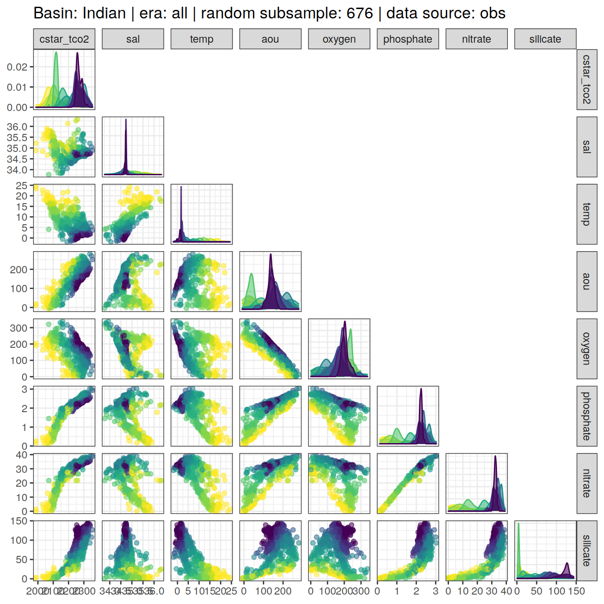

eMLR - assumption testing
Jens Daniel Müller
10 August, 2021
Last updated: 2021-08-10
Checks: 7 0
Knit directory: emlr_obs_v_XXX/
This reproducible R Markdown analysis was created with workflowr (version 1.6.2). The Checks tab describes the reproducibility checks that were applied when the results were created. The Past versions tab lists the development history.
Great! Since the R Markdown file has been committed to the Git repository, you know the exact version of the code that produced these results.
Great job! The global environment was empty. Objects defined in the global environment can affect the analysis in your R Markdown file in unknown ways. For reproduciblity it’s best to always run the code in an empty environment.
The command set.seed(20200707) was run prior to running the code in the R Markdown file. Setting a seed ensures that any results that rely on randomness, e.g. subsampling or permutations, are reproducible.
Great job! Recording the operating system, R version, and package versions is critical for reproducibility.
Nice! There were no cached chunks for this analysis, so you can be confident that you successfully produced the results during this run.
Great job! Using relative paths to the files within your workflowr project makes it easier to run your code on other machines.
Great! You are using Git for version control. Tracking code development and connecting the code version to the results is critical for reproducibility.
The results in this page were generated with repository version 26d595c. See the Past versions tab to see a history of the changes made to the R Markdown and HTML files.
Note that you need to be careful to ensure that all relevant files for the analysis have been committed to Git prior to generating the results (you can use wflow_publish or wflow_git_commit). workflowr only checks the R Markdown file, but you know if there are other scripts or data files that it depends on. Below is the status of the Git repository when the results were generated:
Ignored files:
Ignored: .Rhistory
Ignored: .Rproj.user/
Unstaged changes:
Modified: code/Workflowr_project_managment.R
Modified: data/auxillary/params_local.rds
Note that any generated files, e.g. HTML, png, CSS, etc., are not included in this status report because it is ok for generated content to have uncommitted changes.
These are the previous versions of the repository in which changes were made to the R Markdown (analysis/eMLR_assumption_testing.Rmd) and HTML (docs/eMLR_assumption_testing.html) files. If you’ve configured a remote Git repository (see ?wflow_git_remote), click on the hyperlinks in the table below to view the files as they were in that past version.
| File | Version | Author | Date | Message |
|---|---|---|---|---|
| html | 9943b45 | jens-daniel-mueller | 2021-08-10 | Build site. |
| html | 0b00a2b | jens-daniel-mueller | 2021-08-09 | Build site. |
| html | 755c6b1 | jens-daniel-mueller | 2021-08-09 | Build site. |
| html | cd8e0d5 | jens-daniel-mueller | 2021-08-06 | Build site. |
| html | 15773a0 | jens-daniel-mueller | 2021-08-06 | included calculation of revelle factor |
| html | da61d1a | jens-daniel-mueller | 2021-08-06 | Build site. |
| html | 340d731 | jens-daniel-mueller | 2021-08-06 | Build site. |
| html | 71546e4 | jens-daniel-mueller | 2021-08-06 | test with stricter CANYON-B filtering |
| html | 29444a1 | jens-daniel-mueller | 2021-08-05 | Build site. |
| html | 42e80c0 | jens-daniel-mueller | 2021-08-04 | Build site. |
| html | 48f6eed | jens-daniel-mueller | 2021-08-04 | Build site. |
| html | 1c597ab | jens-daniel-mueller | 2021-08-04 | Build site. |
| html | 81a46a4 | jens-daniel-mueller | 2021-08-03 | Build site. |
| html | b88c61b | jens-daniel-mueller | 2021-08-03 | Build site. |
| html | 0f0d5e5 | jens-daniel-mueller | 2021-08-03 | Build site. |
| html | a53656d | jens-daniel-mueller | 2021-08-03 | Build site. |
| html | 88f7356 | jens-daniel-mueller | 2021-08-02 | Build site. |
| html | d759279 | jens-daniel-mueller | 2021-08-02 | Build site. |
| html | 127b801 | jens-daniel-mueller | 2021-07-24 | Build site. |
| html | 1f65ef1 | jens-daniel-mueller | 2021-07-23 | Build site. |
| html | 912d90e | jens-daniel-mueller | 2021-07-23 | Build site. |
| html | 2477316 | jens-daniel-mueller | 2021-07-23 | rebuild: surface dcant mapping seperate |
| html | c9ccc00 | jens-daniel-mueller | 2021-07-22 | Build site. |
| html | 426b2df | jens-daniel-mueller | 2021-07-21 | Build site. |
| html | 971ce87 | jens-daniel-mueller | 2021-07-13 | Build site. |
| html | c18a8b1 | jens-daniel-mueller | 2021-07-09 | Build site. |
| Rmd | 795a3b0 | jens-daniel-mueller | 2021-07-09 | complete revision |
| html | 910d64a | jens-daniel-mueller | 2021-07-02 | Build site. |
| html | 1cbf907 | jens-daniel-mueller | 2021-07-02 | Build site. |
| html | 955f5dc | jens-daniel-mueller | 2021-06-29 | Build site. |
| html | 9480f94 | jens-daniel-mueller | 2021-06-29 | Build site. |
| html | d054c39 | jens-daniel-mueller | 2021-06-24 | Build site. |
| html | 4fcd066 | jens-daniel-mueller | 2021-06-24 | Build site. |
| html | 3b6387f | jens-daniel-mueller | 2021-06-18 | Build site. |
| html | 3052a6c | jens-daniel-mueller | 2021-06-15 | Build site. |
| html | 3cb64bd | jens-daniel-mueller | 2021-06-15 | Build site. |
| html | c6b3da6 | jens-daniel-mueller | 2021-06-14 | Build site. |
| html | 48c73fc | jens-daniel-mueller | 2021-06-14 | Build site. |
| html | 439ee80 | jens-daniel-mueller | 2021-06-11 | Build site. |
| html | 33ffcab | jens-daniel-mueller | 2021-06-10 | Build site. |
| html | 7e1f407 | jens-daniel-mueller | 2021-06-10 | Build site. |
| html | 2cbe18c | jens-daniel-mueller | 2021-06-10 | added zonal mean section control plots |
| html | 69c79d0 | jens-daniel-mueller | 2021-06-08 | Build site. |
| html | 1772903 | jens-daniel-mueller | 2021-06-07 | Build site. |
| html | 594ed9a | jens-daniel-mueller | 2021-06-04 | Build site. |
| html | db7df0e | jens-daniel-mueller | 2021-06-04 | rebuild without overlapping eras |
| html | 2edc791 | jens-daniel-mueller | 2021-06-04 | Build site. |
| html | 207339d | jens-daniel-mueller | 2021-06-03 | Build site. |
| html | 315710b | jens-daniel-mueller | 2021-06-03 | include anomalous changes |
| html | be90356 | jens-daniel-mueller | 2021-06-02 | Build site. |
| html | d37a85d | jens-daniel-mueller | 2021-05-31 | Build site. |
| html | 4b7a5ee | jens-daniel-mueller | 2021-05-28 | Build site. |
| html | 12b455a | jens-daniel-mueller | 2021-05-27 | Build site. |
| Rmd | ee13efb | jens-daniel-mueller | 2021-05-27 | optional source of local params fully implemented |
| html | 8c736a6 | jens-daniel-mueller | 2021-05-27 | Build site. |
| Rmd | dc8e4e1 | jens-daniel-mueller | 2021-05-27 | optional source of local params implemented |
| html | 25bd183 | jens-daniel-mueller | 2021-05-26 | Build site. |
| html | b79cb2d | jens-daniel-mueller | 2021-05-20 | Build site. |
| html | 62bd574 | jens-daniel-mueller | 2021-05-20 | Build site. |
| html | 7c56c39 | jens-daniel-mueller | 2021-05-19 | Build site. |
| html | 0de759e | jens-daniel-mueller | 2021-05-13 | Build site. |
| html | 52e7583 | jens-daniel-mueller | 2021-05-12 | Build site. |
| html | 969e631 | jens-daniel-mueller | 2021-05-12 | Build site. |
| html | d2a83bc | jens-daniel-mueller | 2021-04-16 | Build site. |
| html | c0a47df | jens-daniel-mueller | 2021-04-16 | Build site. |
| html | 50290e8 | jens-daniel-mueller | 2021-04-16 | overlapping eras |
| html | a00ec94 | jens-daniel-mueller | 2021-04-16 | Build site. |
| html | b6fe355 | jens-daniel-mueller | 2021-04-16 | Build site. |
| html | 81b7c6d | jens-daniel-mueller | 2021-04-16 | Build site. |
| html | ddec5b7 | jens-daniel-mueller | 2021-04-15 | Build site. |
| html | 29edae5 | jens-daniel-mueller | 2021-04-14 | Build site. |
| html | 099d566 | jens-daniel-mueller | 2021-04-14 | Build site. |
| html | bb44686 | jens-daniel-mueller | 2021-04-14 | Build site. |
| html | bf40480 | jens-daniel-mueller | 2021-04-13 | Build site. |
| html | 9f31fe3 | jens-daniel-mueller | 2021-04-13 | Build site. |
| Rmd | 80e1ee3 | jens-daniel-mueller | 2021-04-13 | rerun post-2000 with model data |
| html | c98be84 | jens-daniel-mueller | 2021-04-13 | Build site. |
| html | ea17c90 | jens-daniel-mueller | 2021-04-09 | Build site. |
| Rmd | 4d61e3d | jens-daniel-mueller | 2021-04-09 | included model data |
| html | 338dd3c | jens-daniel-mueller | 2021-04-09 | Build site. |
| html | a79ca2c | jens-daniel-mueller | 2021-04-09 | included model data |
| html | 7831fd3 | jens-daniel-mueller | 2021-04-09 | Build site. |
| html | 20b26d4 | jens-daniel-mueller | 2021-04-08 | Build site. |
| html | c0895f8 | jens-daniel-mueller | 2021-04-07 | Build site. |
| html | 156d5b7 | jens-daniel-mueller | 2021-04-07 | Build site. |
| html | eb827c9 | jens-daniel-mueller | 2021-04-07 | Build site. |
| Rmd | 49be8ed | jens-daniel-mueller | 2021-03-26 | included model data |
| html | ab5c8cf | jens-daniel-mueller | 2021-03-24 | Build site. |
| Rmd | da3c481 | jens-daniel-mueller | 2021-03-24 | included model data |
| html | 19faa17 | jens-daniel-mueller | 2021-03-24 | Build site. |
| Rmd | ae3b4d7 | jens-daniel-mueller | 2021-03-24 | included model data |
| html | 03b6009 | jens-daniel-mueller | 2021-03-23 | removed before copying template |
| html | 98d4a6d | jens-daniel-mueller | 2021-03-23 | Build site. |
| html | f155edd | jens-daniel-mueller | 2021-03-23 | Build site. |
| html | 380d215 | jens-daniel-mueller | 2021-03-21 | Build site. |
| html | 33b385b | jens-daniel-mueller | 2021-03-20 | Build site. |
| html | 330dcd0 | jens-daniel-mueller | 2021-03-20 | Build site. |
| html | 83a13de | jens-daniel-mueller | 2021-03-20 | Build site. |
| html | cf98c6d | jens-daniel-mueller | 2021-03-16 | Build site. |
| html | a1d52ff | jens-daniel-mueller | 2021-03-15 | Build site. |
| html | 0bade3b | jens-daniel-mueller | 2021-03-15 | Build site. |
| html | 27c1f4b | jens-daniel-mueller | 2021-03-14 | Build site. |
| html | af75ebf | jens-daniel-mueller | 2021-03-14 | Build site. |
| html | 5017709 | jens-daniel-mueller | 2021-03-11 | Build site. |
| html | 585b07f | jens-daniel-mueller | 2021-03-11 | Build site. |
| html | 6482ed7 | jens-daniel-mueller | 2021-03-11 | Build site. |
| html | 85a5ed2 | jens-daniel-mueller | 2021-03-10 | Build site. |
| html | 00688a1 | jens-daniel-mueller | 2021-03-05 | Build site. |
| html | 6c0bec6 | jens-daniel-mueller | 2021-03-05 | Build site. |
| html | 3c2ec33 | jens-daniel-mueller | 2021-03-05 | Build site. |
| html | af70b94 | jens-daniel-mueller | 2021-03-04 | Build site. |
| html | 86406d5 | jens-daniel-mueller | 2021-02-24 | Build site. |
| html | 3d3b4cc | jens-daniel-mueller | 2021-02-23 | Build site. |
| html | 7b672f7 | jens-daniel-mueller | 2021-01-11 | Build site. |
| html | 33ba23c | jens-daniel-mueller | 2021-01-07 | Build site. |
| html | 318609d | jens-daniel-mueller | 2020-12-23 | adapted more variable predictor selection |
| html | 9d0b2d0 | jens-daniel-mueller | 2020-12-23 | Build site. |
| html | 0aa2b50 | jens-daniel-mueller | 2020-12-23 | remove html before duplication |
| html | 39113c3 | jens-daniel-mueller | 2020-12-23 | Build site. |
| html | 2886da0 | jens-daniel-mueller | 2020-12-19 | Build site. |
| html | 02f0ee9 | jens-daniel-mueller | 2020-12-18 | cleaned up for copying template |
| html | 965dba3 | jens-daniel-mueller | 2020-12-18 | Build site. |
| html | 5d452fe | jens-daniel-mueller | 2020-12-18 | Build site. |
| Rmd | ca65bf5 | jens-daniel-mueller | 2020-12-18 | rebuild after final cleaning |
| html | 7bcb4eb | jens-daniel-mueller | 2020-12-18 | Build site. |
| html | d397028 | jens-daniel-mueller | 2020-12-18 | Build site. |
| html | 7131186 | jens-daniel-mueller | 2020-12-17 | Build site. |
| html | 22b07fb | jens-daniel-mueller | 2020-12-17 | Build site. |
| html | f3a708f | jens-daniel-mueller | 2020-12-17 | Build site. |
| html | e4ca289 | jens-daniel-mueller | 2020-12-16 | Build site. |
| html | 158fe26 | jens-daniel-mueller | 2020-12-15 | Build site. |
| html | 7a9a4cb | jens-daniel-mueller | 2020-12-15 | Build site. |
| html | 61b263c | jens-daniel-mueller | 2020-12-15 | Build site. |
| html | 4d612dd | jens-daniel-mueller | 2020-12-15 | Build site. |
| Rmd | e7e5ff1 | jens-daniel-mueller | 2020-12-15 | rebuild with eMLR target variable selection |
| html | 953caf3 | jens-daniel-mueller | 2020-12-15 | Build site. |
| html | 42daf5c | jens-daniel-mueller | 2020-12-14 | Build site. |
| Rmd | 923aa7f | jens-daniel-mueller | 2020-12-14 | rebuild with new path and auto folder creation |
| html | 984697e | jens-daniel-mueller | 2020-12-12 | Build site. |
| html | 3ebff89 | jens-daniel-mueller | 2020-12-12 | Build site. |
| html | 5d96d3c | jens-daniel-mueller | 2020-12-11 | Build site. |
| Rmd | 3d33a37 | jens-daniel-mueller | 2020-12-11 | selectable basinmask, try 5 |
| html | b01a367 | jens-daniel-mueller | 2020-12-09 | Build site. |
| html | 24a632f | jens-daniel-mueller | 2020-12-07 | Build site. |
| html | 92dca91 | jens-daniel-mueller | 2020-12-07 | Build site. |
| html | 6a8004b | jens-daniel-mueller | 2020-12-07 | Build site. |
| html | 70bf1a5 | jens-daniel-mueller | 2020-12-07 | Build site. |
| html | 7555355 | jens-daniel-mueller | 2020-12-07 | Build site. |
| html | 143d6fa | jens-daniel-mueller | 2020-12-07 | Build site. |
| Rmd | 33b1973 | jens-daniel-mueller | 2020-12-07 | run with WOCE flag 2 only |
| html | abc6818 | jens-daniel-mueller | 2020-12-03 | Build site. |
| Rmd | 992ba15 | jens-daniel-mueller | 2020-12-03 | rebuild with variable inventory depth |
| html | c8c2e7b | jens-daniel-mueller | 2020-12-03 | Build site. |
| Rmd | 83203db | jens-daniel-mueller | 2020-12-03 | calculate cant with variable inventory depth |
| html | 090e4d5 | jens-daniel-mueller | 2020-12-02 | Build site. |
| html | 7c25f7a | jens-daniel-mueller | 2020-12-02 | Build site. |
| html | ec8dc38 | jens-daniel-mueller | 2020-12-02 | Build site. |
| html | c987de1 | jens-daniel-mueller | 2020-12-02 | Build site. |
| html | f8358f8 | jens-daniel-mueller | 2020-12-02 | Build site. |
| html | b03ddb8 | jens-daniel-mueller | 2020-12-02 | Build site. |
| Rmd | 9183e8f | jens-daniel-mueller | 2020-12-02 | revised assignment of era to eras |
| html | 22d0127 | jens-daniel-mueller | 2020-12-01 | Build site. |
| html | 0ff728b | jens-daniel-mueller | 2020-12-01 | Build site. |
| html | 91435ae | jens-daniel-mueller | 2020-12-01 | Build site. |
| Rmd | 17d09be | jens-daniel-mueller | 2020-12-01 | auto eras naming |
| html | cf19652 | jens-daniel-mueller | 2020-11-30 | Build site. |
| Rmd | 2842970 | jens-daniel-mueller | 2020-11-30 | cleaned for eMLR part only |
| html | 196be51 | jens-daniel-mueller | 2020-11-30 | Build site. |
| Rmd | 7a4b015 | jens-daniel-mueller | 2020-11-30 | first rebuild on ETH server |
| Rmd | bc61ce3 | Jens Müller | 2020-11-30 | Initial commit |
| html | bc61ce3 | Jens Müller | 2020-11-30 | Initial commit |
1 Version ID
The results displayed on this site correspond to the Version_ID: v_XXX
2 Required data
Required are:
- cleaned and prepared GLODAPv2.2020 file
GLODAP <-
read_csv(paste(path_version_data,
"GLODAPv2.2020_MLR_fitting_ready.csv",
sep = ""))3 Predictor correlation
The correlation between:
- pairs of seven potential predictor variables and
- C* and seven potential predictor variables
were investigated based on:
- property-property plots and
- calculated correlation coeffcients.
3.1 Correlation plots
For an overview, a random subset of data from all eras was plotted separately for both basins, with color indicating neutral density slabs (high density = dark-purple color).
plot_fun <- function(df){
ggpairs(
data = df,
columns = c(params_local$MLR_target,
params_local$MLR_predictors),
upper = "blank",
ggplot2::aes(col = gamma_slab, fill = gamma_slab, alpha = 0.01)
) +
scale_fill_viridis_d(direction = -1) +
scale_color_viridis_d(direction = -1) +
labs(title = paste(
"Basin:",
unique(df$basin),
"| era: all | random subsample:",
nrow(df),
"| data source:",
unique(df$data_source)
))
}
GLODAP %>%
slice_sample(n = 5e3) %>%
group_split(basin, data_source) %>%
# head(1) %>%
map(plot_fun)[[1]]
| Version | Author | Date |
|---|---|---|
| 9943b45 | jens-daniel-mueller | 2021-08-10 |
| 0b00a2b | jens-daniel-mueller | 2021-08-09 |
| 755c6b1 | jens-daniel-mueller | 2021-08-09 |
| cd8e0d5 | jens-daniel-mueller | 2021-08-06 |
| 15773a0 | jens-daniel-mueller | 2021-08-06 |
| da61d1a | jens-daniel-mueller | 2021-08-06 |
| 340d731 | jens-daniel-mueller | 2021-08-06 |
| 71546e4 | jens-daniel-mueller | 2021-08-06 |
| 29444a1 | jens-daniel-mueller | 2021-08-05 |
| 42e80c0 | jens-daniel-mueller | 2021-08-04 |
| 48f6eed | jens-daniel-mueller | 2021-08-04 |
| 81a46a4 | jens-daniel-mueller | 2021-08-03 |
| b88c61b | jens-daniel-mueller | 2021-08-03 |
| a53656d | jens-daniel-mueller | 2021-08-03 |
| 88f7356 | jens-daniel-mueller | 2021-08-02 |
| d759279 | jens-daniel-mueller | 2021-08-02 |
| 127b801 | jens-daniel-mueller | 2021-07-24 |
| 912d90e | jens-daniel-mueller | 2021-07-23 |
| 2477316 | jens-daniel-mueller | 2021-07-23 |
| c9ccc00 | jens-daniel-mueller | 2021-07-22 |
| c18a8b1 | jens-daniel-mueller | 2021-07-09 |
| 910d64a | jens-daniel-mueller | 2021-07-02 |
| 1cbf907 | jens-daniel-mueller | 2021-07-02 |
| 955f5dc | jens-daniel-mueller | 2021-06-29 |
| 9480f94 | jens-daniel-mueller | 2021-06-29 |
| d054c39 | jens-daniel-mueller | 2021-06-24 |
| 4fcd066 | jens-daniel-mueller | 2021-06-24 |
| 3b6387f | jens-daniel-mueller | 2021-06-18 |
| c6b3da6 | jens-daniel-mueller | 2021-06-14 |
| 439ee80 | jens-daniel-mueller | 2021-06-11 |
| 33ffcab | jens-daniel-mueller | 2021-06-10 |
| 7e1f407 | jens-daniel-mueller | 2021-06-10 |
| 2cbe18c | jens-daniel-mueller | 2021-06-10 |
| 69c79d0 | jens-daniel-mueller | 2021-06-08 |
| 1772903 | jens-daniel-mueller | 2021-06-07 |
| 594ed9a | jens-daniel-mueller | 2021-06-04 |
| db7df0e | jens-daniel-mueller | 2021-06-04 |
| 2edc791 | jens-daniel-mueller | 2021-06-04 |
| 207339d | jens-daniel-mueller | 2021-06-03 |
| 315710b | jens-daniel-mueller | 2021-06-03 |
| be90356 | jens-daniel-mueller | 2021-06-02 |
| d37a85d | jens-daniel-mueller | 2021-05-31 |
| 4b7a5ee | jens-daniel-mueller | 2021-05-28 |
| 25bd183 | jens-daniel-mueller | 2021-05-26 |
| 62bd574 | jens-daniel-mueller | 2021-05-20 |
| 7c56c39 | jens-daniel-mueller | 2021-05-19 |
| 52e7583 | jens-daniel-mueller | 2021-05-12 |
| 969e631 | jens-daniel-mueller | 2021-05-12 |
| d2a83bc | jens-daniel-mueller | 2021-04-16 |
| c0a47df | jens-daniel-mueller | 2021-04-16 |
| 50290e8 | jens-daniel-mueller | 2021-04-16 |
| a00ec94 | jens-daniel-mueller | 2021-04-16 |
| b6fe355 | jens-daniel-mueller | 2021-04-16 |
| 81b7c6d | jens-daniel-mueller | 2021-04-16 |
| ddec5b7 | jens-daniel-mueller | 2021-04-15 |
| 29edae5 | jens-daniel-mueller | 2021-04-14 |
| 9f31fe3 | jens-daniel-mueller | 2021-04-13 |
| ea17c90 | jens-daniel-mueller | 2021-04-09 |
| 338dd3c | jens-daniel-mueller | 2021-04-09 |
| a79ca2c | jens-daniel-mueller | 2021-04-09 |
| eb827c9 | jens-daniel-mueller | 2021-04-07 |
| ab5c8cf | jens-daniel-mueller | 2021-03-24 |
| 03b6009 | jens-daniel-mueller | 2021-03-23 |
| 98d4a6d | jens-daniel-mueller | 2021-03-23 |
| 83a13de | jens-daniel-mueller | 2021-03-20 |
| cf98c6d | jens-daniel-mueller | 2021-03-16 |
| a1d52ff | jens-daniel-mueller | 2021-03-15 |
| 0bade3b | jens-daniel-mueller | 2021-03-15 |
| 27c1f4b | jens-daniel-mueller | 2021-03-14 |
| af75ebf | jens-daniel-mueller | 2021-03-14 |
| 5017709 | jens-daniel-mueller | 2021-03-11 |
| 585b07f | jens-daniel-mueller | 2021-03-11 |
| 85a5ed2 | jens-daniel-mueller | 2021-03-10 |
| 6c0bec6 | jens-daniel-mueller | 2021-03-05 |
| af70b94 | jens-daniel-mueller | 2021-03-04 |
| 7b672f7 | jens-daniel-mueller | 2021-01-11 |
| 33ba23c | jens-daniel-mueller | 2021-01-07 |
| 318609d | jens-daniel-mueller | 2020-12-23 |
| 9d0b2d0 | jens-daniel-mueller | 2020-12-23 |
| 0aa2b50 | jens-daniel-mueller | 2020-12-23 |
| 2886da0 | jens-daniel-mueller | 2020-12-19 |
| 02f0ee9 | jens-daniel-mueller | 2020-12-18 |
| 7bcb4eb | jens-daniel-mueller | 2020-12-18 |
| 158fe26 | jens-daniel-mueller | 2020-12-15 |
| 7a9a4cb | jens-daniel-mueller | 2020-12-15 |
| 61b263c | jens-daniel-mueller | 2020-12-15 |
| 4d612dd | jens-daniel-mueller | 2020-12-15 |
| 984697e | jens-daniel-mueller | 2020-12-12 |
| 3ebff89 | jens-daniel-mueller | 2020-12-12 |
| 5d96d3c | jens-daniel-mueller | 2020-12-11 |
[[2]]
| Version | Author | Date |
|---|---|---|
| 9943b45 | jens-daniel-mueller | 2021-08-10 |
| 0b00a2b | jens-daniel-mueller | 2021-08-09 |
| 755c6b1 | jens-daniel-mueller | 2021-08-09 |
| cd8e0d5 | jens-daniel-mueller | 2021-08-06 |
| 15773a0 | jens-daniel-mueller | 2021-08-06 |
| da61d1a | jens-daniel-mueller | 2021-08-06 |
| 340d731 | jens-daniel-mueller | 2021-08-06 |
| 71546e4 | jens-daniel-mueller | 2021-08-06 |
| 29444a1 | jens-daniel-mueller | 2021-08-05 |
| 42e80c0 | jens-daniel-mueller | 2021-08-04 |
| 48f6eed | jens-daniel-mueller | 2021-08-04 |
| 81a46a4 | jens-daniel-mueller | 2021-08-03 |
| b88c61b | jens-daniel-mueller | 2021-08-03 |
| a53656d | jens-daniel-mueller | 2021-08-03 |
| 88f7356 | jens-daniel-mueller | 2021-08-02 |
| d759279 | jens-daniel-mueller | 2021-08-02 |
| 127b801 | jens-daniel-mueller | 2021-07-24 |
| 912d90e | jens-daniel-mueller | 2021-07-23 |
| 2477316 | jens-daniel-mueller | 2021-07-23 |
| c9ccc00 | jens-daniel-mueller | 2021-07-22 |
| c18a8b1 | jens-daniel-mueller | 2021-07-09 |
| 910d64a | jens-daniel-mueller | 2021-07-02 |
| 1cbf907 | jens-daniel-mueller | 2021-07-02 |
| 955f5dc | jens-daniel-mueller | 2021-06-29 |
| 9480f94 | jens-daniel-mueller | 2021-06-29 |
| d054c39 | jens-daniel-mueller | 2021-06-24 |
| 4fcd066 | jens-daniel-mueller | 2021-06-24 |
| 3b6387f | jens-daniel-mueller | 2021-06-18 |
| c6b3da6 | jens-daniel-mueller | 2021-06-14 |
| 439ee80 | jens-daniel-mueller | 2021-06-11 |
| 33ffcab | jens-daniel-mueller | 2021-06-10 |
| 7e1f407 | jens-daniel-mueller | 2021-06-10 |
| 2cbe18c | jens-daniel-mueller | 2021-06-10 |
| 69c79d0 | jens-daniel-mueller | 2021-06-08 |
| 1772903 | jens-daniel-mueller | 2021-06-07 |
| 594ed9a | jens-daniel-mueller | 2021-06-04 |
| db7df0e | jens-daniel-mueller | 2021-06-04 |
| 2edc791 | jens-daniel-mueller | 2021-06-04 |
| 207339d | jens-daniel-mueller | 2021-06-03 |
| 315710b | jens-daniel-mueller | 2021-06-03 |
| d37a85d | jens-daniel-mueller | 2021-05-31 |
| 4b7a5ee | jens-daniel-mueller | 2021-05-28 |
| 25bd183 | jens-daniel-mueller | 2021-05-26 |
| 62bd574 | jens-daniel-mueller | 2021-05-20 |
| 7c56c39 | jens-daniel-mueller | 2021-05-19 |
| 52e7583 | jens-daniel-mueller | 2021-05-12 |
| 969e631 | jens-daniel-mueller | 2021-05-12 |
| d2a83bc | jens-daniel-mueller | 2021-04-16 |
| c0a47df | jens-daniel-mueller | 2021-04-16 |
| 50290e8 | jens-daniel-mueller | 2021-04-16 |
| a00ec94 | jens-daniel-mueller | 2021-04-16 |
| b6fe355 | jens-daniel-mueller | 2021-04-16 |
| 81b7c6d | jens-daniel-mueller | 2021-04-16 |
| ddec5b7 | jens-daniel-mueller | 2021-04-15 |
| 29edae5 | jens-daniel-mueller | 2021-04-14 |
| 9f31fe3 | jens-daniel-mueller | 2021-04-13 |
| ea17c90 | jens-daniel-mueller | 2021-04-09 |
| 338dd3c | jens-daniel-mueller | 2021-04-09 |
| a79ca2c | jens-daniel-mueller | 2021-04-09 |
| eb827c9 | jens-daniel-mueller | 2021-04-07 |
| ab5c8cf | jens-daniel-mueller | 2021-03-24 |
| 03b6009 | jens-daniel-mueller | 2021-03-23 |
| 98d4a6d | jens-daniel-mueller | 2021-03-23 |
| 83a13de | jens-daniel-mueller | 2021-03-20 |
| cf98c6d | jens-daniel-mueller | 2021-03-16 |
| a1d52ff | jens-daniel-mueller | 2021-03-15 |
| 0bade3b | jens-daniel-mueller | 2021-03-15 |
| 27c1f4b | jens-daniel-mueller | 2021-03-14 |
| af75ebf | jens-daniel-mueller | 2021-03-14 |
| 5017709 | jens-daniel-mueller | 2021-03-11 |
| 585b07f | jens-daniel-mueller | 2021-03-11 |
| 85a5ed2 | jens-daniel-mueller | 2021-03-10 |
| 6c0bec6 | jens-daniel-mueller | 2021-03-05 |
| af70b94 | jens-daniel-mueller | 2021-03-04 |
| 7b672f7 | jens-daniel-mueller | 2021-01-11 |
| 33ba23c | jens-daniel-mueller | 2021-01-07 |
| 318609d | jens-daniel-mueller | 2020-12-23 |
| 9d0b2d0 | jens-daniel-mueller | 2020-12-23 |
| 0aa2b50 | jens-daniel-mueller | 2020-12-23 |
| 2886da0 | jens-daniel-mueller | 2020-12-19 |
| 02f0ee9 | jens-daniel-mueller | 2020-12-18 |
| 7bcb4eb | jens-daniel-mueller | 2020-12-18 |
| 158fe26 | jens-daniel-mueller | 2020-12-15 |
| 7a9a4cb | jens-daniel-mueller | 2020-12-15 |
| 61b263c | jens-daniel-mueller | 2020-12-15 |
| 4d612dd | jens-daniel-mueller | 2020-12-15 |
| 984697e | jens-daniel-mueller | 2020-12-12 |
| 3ebff89 | jens-daniel-mueller | 2020-12-12 |
| 5d96d3c | jens-daniel-mueller | 2020-12-11 |
[[3]]
| Version | Author | Date |
|---|---|---|
| 9943b45 | jens-daniel-mueller | 2021-08-10 |
| da61d1a | jens-daniel-mueller | 2021-08-06 |
| 340d731 | jens-daniel-mueller | 2021-08-06 |
| 71546e4 | jens-daniel-mueller | 2021-08-06 |
| 29444a1 | jens-daniel-mueller | 2021-08-05 |
| 42e80c0 | jens-daniel-mueller | 2021-08-04 |
| 48f6eed | jens-daniel-mueller | 2021-08-04 |
| 81a46a4 | jens-daniel-mueller | 2021-08-03 |
| b88c61b | jens-daniel-mueller | 2021-08-03 |
| a53656d | jens-daniel-mueller | 2021-08-03 |
| 88f7356 | jens-daniel-mueller | 2021-08-02 |
| d759279 | jens-daniel-mueller | 2021-08-02 |
| 127b801 | jens-daniel-mueller | 2021-07-24 |
| 912d90e | jens-daniel-mueller | 2021-07-23 |
| 2477316 | jens-daniel-mueller | 2021-07-23 |
| c9ccc00 | jens-daniel-mueller | 2021-07-22 |
| c18a8b1 | jens-daniel-mueller | 2021-07-09 |
| 910d64a | jens-daniel-mueller | 2021-07-02 |
| 1cbf907 | jens-daniel-mueller | 2021-07-02 |
| 955f5dc | jens-daniel-mueller | 2021-06-29 |
| 9480f94 | jens-daniel-mueller | 2021-06-29 |
| d054c39 | jens-daniel-mueller | 2021-06-24 |
| 4fcd066 | jens-daniel-mueller | 2021-06-24 |
| 3b6387f | jens-daniel-mueller | 2021-06-18 |
| c6b3da6 | jens-daniel-mueller | 2021-06-14 |
| 439ee80 | jens-daniel-mueller | 2021-06-11 |
| 33ffcab | jens-daniel-mueller | 2021-06-10 |
| 7e1f407 | jens-daniel-mueller | 2021-06-10 |
| 2cbe18c | jens-daniel-mueller | 2021-06-10 |
| 69c79d0 | jens-daniel-mueller | 2021-06-08 |
| 1772903 | jens-daniel-mueller | 2021-06-07 |
| 594ed9a | jens-daniel-mueller | 2021-06-04 |
| db7df0e | jens-daniel-mueller | 2021-06-04 |
| 2edc791 | jens-daniel-mueller | 2021-06-04 |
| 207339d | jens-daniel-mueller | 2021-06-03 |
| 315710b | jens-daniel-mueller | 2021-06-03 |
| be90356 | jens-daniel-mueller | 2021-06-02 |
| d37a85d | jens-daniel-mueller | 2021-05-31 |
| 4b7a5ee | jens-daniel-mueller | 2021-05-28 |
| 25bd183 | jens-daniel-mueller | 2021-05-26 |
| 62bd574 | jens-daniel-mueller | 2021-05-20 |
| 7c56c39 | jens-daniel-mueller | 2021-05-19 |
| 52e7583 | jens-daniel-mueller | 2021-05-12 |
| 969e631 | jens-daniel-mueller | 2021-05-12 |
| d2a83bc | jens-daniel-mueller | 2021-04-16 |
| c0a47df | jens-daniel-mueller | 2021-04-16 |
| 50290e8 | jens-daniel-mueller | 2021-04-16 |
| a00ec94 | jens-daniel-mueller | 2021-04-16 |
| b6fe355 | jens-daniel-mueller | 2021-04-16 |
| 81b7c6d | jens-daniel-mueller | 2021-04-16 |
| ddec5b7 | jens-daniel-mueller | 2021-04-15 |
| 29edae5 | jens-daniel-mueller | 2021-04-14 |
| 099d566 | jens-daniel-mueller | 2021-04-14 |
| bb44686 | jens-daniel-mueller | 2021-04-14 |
| bf40480 | jens-daniel-mueller | 2021-04-13 |
| 9f31fe3 | jens-daniel-mueller | 2021-04-13 |
| ea17c90 | jens-daniel-mueller | 2021-04-09 |
| 338dd3c | jens-daniel-mueller | 2021-04-09 |
| a79ca2c | jens-daniel-mueller | 2021-04-09 |
| eb827c9 | jens-daniel-mueller | 2021-04-07 |
| ab5c8cf | jens-daniel-mueller | 2021-03-24 |
| 0aa2b50 | jens-daniel-mueller | 2020-12-23 |
| 2886da0 | jens-daniel-mueller | 2020-12-19 |
| 02f0ee9 | jens-daniel-mueller | 2020-12-18 |
| 7bcb4eb | jens-daniel-mueller | 2020-12-18 |
| 158fe26 | jens-daniel-mueller | 2020-12-15 |
| 7a9a4cb | jens-daniel-mueller | 2020-12-15 |
| 61b263c | jens-daniel-mueller | 2020-12-15 |
| 4d612dd | jens-daniel-mueller | 2020-12-15 |
| 984697e | jens-daniel-mueller | 2020-12-12 |
| 3ebff89 | jens-daniel-mueller | 2020-12-12 |
| 5d96d3c | jens-daniel-mueller | 2020-12-11 |
[[4]]
| Version | Author | Date |
|---|---|---|
| 9943b45 | jens-daniel-mueller | 2021-08-10 |
| da61d1a | jens-daniel-mueller | 2021-08-06 |
| 340d731 | jens-daniel-mueller | 2021-08-06 |
| 71546e4 | jens-daniel-mueller | 2021-08-06 |
| 29444a1 | jens-daniel-mueller | 2021-08-05 |
| 42e80c0 | jens-daniel-mueller | 2021-08-04 |
| 48f6eed | jens-daniel-mueller | 2021-08-04 |
| 81a46a4 | jens-daniel-mueller | 2021-08-03 |
| b88c61b | jens-daniel-mueller | 2021-08-03 |
| a53656d | jens-daniel-mueller | 2021-08-03 |
| 88f7356 | jens-daniel-mueller | 2021-08-02 |
| d759279 | jens-daniel-mueller | 2021-08-02 |
| 127b801 | jens-daniel-mueller | 2021-07-24 |
| 912d90e | jens-daniel-mueller | 2021-07-23 |
| 2477316 | jens-daniel-mueller | 2021-07-23 |
| c9ccc00 | jens-daniel-mueller | 2021-07-22 |
| c18a8b1 | jens-daniel-mueller | 2021-07-09 |
| 910d64a | jens-daniel-mueller | 2021-07-02 |
| 1cbf907 | jens-daniel-mueller | 2021-07-02 |
| 955f5dc | jens-daniel-mueller | 2021-06-29 |
| 9480f94 | jens-daniel-mueller | 2021-06-29 |
| d054c39 | jens-daniel-mueller | 2021-06-24 |
| 4fcd066 | jens-daniel-mueller | 2021-06-24 |
| 3b6387f | jens-daniel-mueller | 2021-06-18 |
| c6b3da6 | jens-daniel-mueller | 2021-06-14 |
| 439ee80 | jens-daniel-mueller | 2021-06-11 |
| 33ffcab | jens-daniel-mueller | 2021-06-10 |
| 7e1f407 | jens-daniel-mueller | 2021-06-10 |
| 2cbe18c | jens-daniel-mueller | 2021-06-10 |
| 69c79d0 | jens-daniel-mueller | 2021-06-08 |
| 1772903 | jens-daniel-mueller | 2021-06-07 |
| 594ed9a | jens-daniel-mueller | 2021-06-04 |
| db7df0e | jens-daniel-mueller | 2021-06-04 |
| 2edc791 | jens-daniel-mueller | 2021-06-04 |
| 207339d | jens-daniel-mueller | 2021-06-03 |
| 315710b | jens-daniel-mueller | 2021-06-03 |
| d37a85d | jens-daniel-mueller | 2021-05-31 |
| 4b7a5ee | jens-daniel-mueller | 2021-05-28 |
| 25bd183 | jens-daniel-mueller | 2021-05-26 |
| 62bd574 | jens-daniel-mueller | 2021-05-20 |
| 7c56c39 | jens-daniel-mueller | 2021-05-19 |
| 52e7583 | jens-daniel-mueller | 2021-05-12 |
| 969e631 | jens-daniel-mueller | 2021-05-12 |
| d2a83bc | jens-daniel-mueller | 2021-04-16 |
| c0a47df | jens-daniel-mueller | 2021-04-16 |
| 50290e8 | jens-daniel-mueller | 2021-04-16 |
| a00ec94 | jens-daniel-mueller | 2021-04-16 |
| b6fe355 | jens-daniel-mueller | 2021-04-16 |
| 81b7c6d | jens-daniel-mueller | 2021-04-16 |
| ddec5b7 | jens-daniel-mueller | 2021-04-15 |
| 29edae5 | jens-daniel-mueller | 2021-04-14 |
| 099d566 | jens-daniel-mueller | 2021-04-14 |
| bb44686 | jens-daniel-mueller | 2021-04-14 |
| bf40480 | jens-daniel-mueller | 2021-04-13 |
| 9f31fe3 | jens-daniel-mueller | 2021-04-13 |
| ea17c90 | jens-daniel-mueller | 2021-04-09 |
| 338dd3c | jens-daniel-mueller | 2021-04-09 |
| a79ca2c | jens-daniel-mueller | 2021-04-09 |
| eb827c9 | jens-daniel-mueller | 2021-04-07 |
| ab5c8cf | jens-daniel-mueller | 2021-03-24 |
| 984697e | jens-daniel-mueller | 2020-12-12 |
| 3ebff89 | jens-daniel-mueller | 2020-12-12 |
| 5d96d3c | jens-daniel-mueller | 2020-12-11 |
[[5]]
| Version | Author | Date |
|---|---|---|
| 9943b45 | jens-daniel-mueller | 2021-08-10 |
| da61d1a | jens-daniel-mueller | 2021-08-06 |
| 340d731 | jens-daniel-mueller | 2021-08-06 |
| 71546e4 | jens-daniel-mueller | 2021-08-06 |
| 29444a1 | jens-daniel-mueller | 2021-08-05 |
| 42e80c0 | jens-daniel-mueller | 2021-08-04 |
| 48f6eed | jens-daniel-mueller | 2021-08-04 |
| 81a46a4 | jens-daniel-mueller | 2021-08-03 |
| b88c61b | jens-daniel-mueller | 2021-08-03 |
| a53656d | jens-daniel-mueller | 2021-08-03 |
| 88f7356 | jens-daniel-mueller | 2021-08-02 |
| 127b801 | jens-daniel-mueller | 2021-07-24 |
| 912d90e | jens-daniel-mueller | 2021-07-23 |
| 2477316 | jens-daniel-mueller | 2021-07-23 |
| c9ccc00 | jens-daniel-mueller | 2021-07-22 |
| c18a8b1 | jens-daniel-mueller | 2021-07-09 |
| 910d64a | jens-daniel-mueller | 2021-07-02 |
| 1cbf907 | jens-daniel-mueller | 2021-07-02 |
| 955f5dc | jens-daniel-mueller | 2021-06-29 |
| b6fe355 | jens-daniel-mueller | 2021-04-16 |
| 81b7c6d | jens-daniel-mueller | 2021-04-16 |
| 099d566 | jens-daniel-mueller | 2021-04-14 |
| bb44686 | jens-daniel-mueller | 2021-04-14 |
| 984697e | jens-daniel-mueller | 2020-12-12 |
| 3ebff89 | jens-daniel-mueller | 2020-12-12 |
| 5d96d3c | jens-daniel-mueller | 2020-12-11 |
[[6]]
| Version | Author | Date |
|---|---|---|
| 9943b45 | jens-daniel-mueller | 2021-08-10 |
| da61d1a | jens-daniel-mueller | 2021-08-06 |
| 340d731 | jens-daniel-mueller | 2021-08-06 |
| 71546e4 | jens-daniel-mueller | 2021-08-06 |
| 29444a1 | jens-daniel-mueller | 2021-08-05 |
| 42e80c0 | jens-daniel-mueller | 2021-08-04 |
| 48f6eed | jens-daniel-mueller | 2021-08-04 |
| 81a46a4 | jens-daniel-mueller | 2021-08-03 |
| b88c61b | jens-daniel-mueller | 2021-08-03 |
| a53656d | jens-daniel-mueller | 2021-08-03 |
| 88f7356 | jens-daniel-mueller | 2021-08-02 |
| 127b801 | jens-daniel-mueller | 2021-07-24 |
| 912d90e | jens-daniel-mueller | 2021-07-23 |
| 2477316 | jens-daniel-mueller | 2021-07-23 |
| c9ccc00 | jens-daniel-mueller | 2021-07-22 |
| c18a8b1 | jens-daniel-mueller | 2021-07-09 |
| 910d64a | jens-daniel-mueller | 2021-07-02 |
| 1cbf907 | jens-daniel-mueller | 2021-07-02 |
| 955f5dc | jens-daniel-mueller | 2021-06-29 |
| b6fe355 | jens-daniel-mueller | 2021-04-16 |
| 81b7c6d | jens-daniel-mueller | 2021-04-16 |
| 099d566 | jens-daniel-mueller | 2021-04-14 |
| bb44686 | jens-daniel-mueller | 2021-04-14 |
GLODAP <- GLODAP %>%
filter(data_source == "obs") %>%
select(-data_source)Individual correlation plots for each basin, era and neutral density (gamma) slab are available at:
/nfs/kryo/work/jenmueller/emlr_cant/observations/v_XXX/figures/Observations_correlation/
if (params_local$plot_all_figures == "y") {
for (i_basin in unique(GLODAP$basin)) {
for (i_era in unique(GLODAP$era)) {
# i_basin <- unique(GLODAP$basin)[1]
# i_era <- unique(GLODAP$era)[1]
GLODAP_basin_era <- GLODAP %>%
filter(basin == i_basin,
era == i_era)
for (i_gamma_slab in unique(GLODAP_basin_era$gamma_slab)) {
# i_gamma_slab <- unique(GLODAP_basin_era$gamma_slab)[5]
GLODAP_highlight <- GLODAP_basin_era %>%
mutate(gamma_highlight = if_else(gamma_slab == i_gamma_slab,
"in", "out")) %>%
arrange(desc(gamma_highlight))
p <- GLODAP_highlight %>%
ggpairs(
columns = c(params_local$MLR_target,
params_local$MLR_predictors),
ggplot2::aes(
col = gamma_highlight,
fill = gamma_highlight,
alpha = 0.01
)
) +
scale_fill_manual(values = c("red", "grey")) +
scale_color_manual(values = c("red", "grey")) +
labs(
title = paste(
i_era,
"|",
i_basin,
"| Gamma slab",
i_gamma_slab,
"| # obs total",
nrow(GLODAP_basin_era),
"| # obs slab",
nrow(GLODAP_highlight %>%
filter(gamma_highlight == "in"))
)
)
png(
filename = paste(
path_version_figures,
"Observations_correlation/",
paste(
"Predictor_correlation",
i_era,
i_basin,
i_gamma_slab,
".png",
sep = "_"
),
sep = ""),
width = 12,
height = 12,
units = "in",
res = 300
)
print(p)
dev.off()
}
}
}
}3.2 Correlation assesment
3.2.1 Calculation of correlation coeffcients
Correlation coefficients were calculated individually within each slabs, era and basin.
for (i_basin in unique(GLODAP$basin)) {
for (i_era in unique(GLODAP$era)) {
# i_basin <- unique(GLODAP$basin)[1]
# i_era <- unique(GLODAP$era)[1]
GLODAP_basin_era <- GLODAP %>%
filter(basin == i_basin,
era == i_era) %>%
select(basin,
era,
gamma_slab,
params_local$MLR_target,
params_local$MLR_predictors)
for (i_gamma_slab in unique(GLODAP_basin_era$gamma_slab)) {
# i_gamma_slab <- unique(GLODAP_basin_era$gamma_slab)[5]
print(i_gamma_slab)
GLODAP_basin_era_slab <- GLODAP_basin_era %>%
filter(gamma_slab == i_gamma_slab)
# calculate correlation table
cor_target_predictor_temp <- GLODAP_basin_era_slab %>%
select(-c(basin, era, gamma_slab)) %>%
correlate() %>%
focus(params_local$MLR_target) %>%
mutate(basin = i_basin,
era = i_era,
gamma_slab = i_gamma_slab)
if (exists("cor_target_predictor")) {
cor_target_predictor <-
bind_rows(cor_target_predictor, cor_target_predictor_temp)
}
if (!exists("cor_target_predictor")) {
cor_target_predictor <- cor_target_predictor_temp
}
cor_predictors_temp <- GLODAP_basin_era_slab %>%
select(-c(basin, era, gamma_slab)) %>%
correlate() %>%
shave %>%
stretch() %>%
filter(!is.na(r),
x != params_local$MLR_target,
y != params_local$MLR_target) %>%
mutate(pair = paste(x, y, sep = " + ")) %>%
select(-c(x, y)) %>%
mutate(basin = i_basin,
era = i_era,
gamma_slab = i_gamma_slab)
if (exists("cor_predictors")) {
cor_predictors <- bind_rows(cor_predictors, cor_predictors_temp)
}
if (!exists("cor_predictors")) {
cor_predictors <- cor_predictors_temp
}
}
}
}
rm(cor_predictors_temp, cor_target_predictor_temp,
i_gamma_slab, i_era, i_basin,
GLODAP_basin_era, GLODAP_basin_era_slab)3.2.2 Predictor pairs
Below, the range of correlations coefficients for each predictor pair is plotted per basin (facet) and density slab (color). Note that the range indicates the min and max values of in total 3 calculated coefficients (one per era).
# calculate min, max, mean across all eras
cor_predictors_stats <- cor_predictors %>%
group_by(pair, basin, gamma_slab) %>%
summarise(mean_r = mean(r),
min_r = min(r),
max_r = max(r)) %>%
ungroup()
# plot figure
cor_predictors_stats %>%
mutate(pair = reorder(pair, mean_r)) %>%
ggplot() +
geom_vline(xintercept = c(-0.9, 0.9), col = "red") +
geom_vline(xintercept = 0) +
geom_linerange(
aes(y = pair, xmin = min_r, xmax = max_r, col = gamma_slab),
position = position_dodge(width = 0.6)) +
facet_wrap(~basin) +
scale_color_viridis_d(direction = -1) +
labs(x = "correlation coefficient", y = "") +
theme(legend.position = "top")
| Version | Author | Date |
|---|---|---|
| 9943b45 | jens-daniel-mueller | 2021-08-10 |
| 0b00a2b | jens-daniel-mueller | 2021-08-09 |
| 755c6b1 | jens-daniel-mueller | 2021-08-09 |
| cd8e0d5 | jens-daniel-mueller | 2021-08-06 |
| 15773a0 | jens-daniel-mueller | 2021-08-06 |
| da61d1a | jens-daniel-mueller | 2021-08-06 |
| 340d731 | jens-daniel-mueller | 2021-08-06 |
| 71546e4 | jens-daniel-mueller | 2021-08-06 |
| 29444a1 | jens-daniel-mueller | 2021-08-05 |
| 42e80c0 | jens-daniel-mueller | 2021-08-04 |
| 48f6eed | jens-daniel-mueller | 2021-08-04 |
| 81a46a4 | jens-daniel-mueller | 2021-08-03 |
| b88c61b | jens-daniel-mueller | 2021-08-03 |
| a53656d | jens-daniel-mueller | 2021-08-03 |
| 88f7356 | jens-daniel-mueller | 2021-08-02 |
| d759279 | jens-daniel-mueller | 2021-08-02 |
| 127b801 | jens-daniel-mueller | 2021-07-24 |
| 912d90e | jens-daniel-mueller | 2021-07-23 |
| 2477316 | jens-daniel-mueller | 2021-07-23 |
| c9ccc00 | jens-daniel-mueller | 2021-07-22 |
| 910d64a | jens-daniel-mueller | 2021-07-02 |
| 1cbf907 | jens-daniel-mueller | 2021-07-02 |
| 955f5dc | jens-daniel-mueller | 2021-06-29 |
| 9480f94 | jens-daniel-mueller | 2021-06-29 |
| d054c39 | jens-daniel-mueller | 2021-06-24 |
| 4fcd066 | jens-daniel-mueller | 2021-06-24 |
| 7e1f407 | jens-daniel-mueller | 2021-06-10 |
| 2cbe18c | jens-daniel-mueller | 2021-06-10 |
| 594ed9a | jens-daniel-mueller | 2021-06-04 |
| db7df0e | jens-daniel-mueller | 2021-06-04 |
| 207339d | jens-daniel-mueller | 2021-06-03 |
| 315710b | jens-daniel-mueller | 2021-06-03 |
| d37a85d | jens-daniel-mueller | 2021-05-31 |
| 25bd183 | jens-daniel-mueller | 2021-05-26 |
| 62bd574 | jens-daniel-mueller | 2021-05-20 |
| 7c56c39 | jens-daniel-mueller | 2021-05-19 |
| 52e7583 | jens-daniel-mueller | 2021-05-12 |
| 969e631 | jens-daniel-mueller | 2021-05-12 |
| d2a83bc | jens-daniel-mueller | 2021-04-16 |
| c0a47df | jens-daniel-mueller | 2021-04-16 |
| 50290e8 | jens-daniel-mueller | 2021-04-16 |
| b6fe355 | jens-daniel-mueller | 2021-04-16 |
| 81b7c6d | jens-daniel-mueller | 2021-04-16 |
| ddec5b7 | jens-daniel-mueller | 2021-04-15 |
| 29edae5 | jens-daniel-mueller | 2021-04-14 |
| 099d566 | jens-daniel-mueller | 2021-04-14 |
| bb44686 | jens-daniel-mueller | 2021-04-14 |
| bf40480 | jens-daniel-mueller | 2021-04-13 |
| 9f31fe3 | jens-daniel-mueller | 2021-04-13 |
| 338dd3c | jens-daniel-mueller | 2021-04-09 |
| a79ca2c | jens-daniel-mueller | 2021-04-09 |
| eb827c9 | jens-daniel-mueller | 2021-04-07 |
| 19faa17 | jens-daniel-mueller | 2021-03-24 |
| 03b6009 | jens-daniel-mueller | 2021-03-23 |
| 98d4a6d | jens-daniel-mueller | 2021-03-23 |
| f155edd | jens-daniel-mueller | 2021-03-23 |
| 83a13de | jens-daniel-mueller | 2021-03-20 |
| cf98c6d | jens-daniel-mueller | 2021-03-16 |
| a1d52ff | jens-daniel-mueller | 2021-03-15 |
| 0bade3b | jens-daniel-mueller | 2021-03-15 |
| 27c1f4b | jens-daniel-mueller | 2021-03-14 |
| af75ebf | jens-daniel-mueller | 2021-03-14 |
| 5017709 | jens-daniel-mueller | 2021-03-11 |
| 585b07f | jens-daniel-mueller | 2021-03-11 |
| 85a5ed2 | jens-daniel-mueller | 2021-03-10 |
| 6c0bec6 | jens-daniel-mueller | 2021-03-05 |
| 7b672f7 | jens-daniel-mueller | 2021-01-11 |
| 33ba23c | jens-daniel-mueller | 2021-01-07 |
| 318609d | jens-daniel-mueller | 2020-12-23 |
| 9d0b2d0 | jens-daniel-mueller | 2020-12-23 |
| 0aa2b50 | jens-daniel-mueller | 2020-12-23 |
| 2886da0 | jens-daniel-mueller | 2020-12-19 |
| 02f0ee9 | jens-daniel-mueller | 2020-12-18 |
| 158fe26 | jens-daniel-mueller | 2020-12-15 |
| 984697e | jens-daniel-mueller | 2020-12-12 |
| 3ebff89 | jens-daniel-mueller | 2020-12-12 |
| 5d96d3c | jens-daniel-mueller | 2020-12-11 |
| 24a632f | jens-daniel-mueller | 2020-12-07 |
| 6a8004b | jens-daniel-mueller | 2020-12-07 |
| 70bf1a5 | jens-daniel-mueller | 2020-12-07 |
| 7555355 | jens-daniel-mueller | 2020-12-07 |
| 143d6fa | jens-daniel-mueller | 2020-12-07 |
| 0ff728b | jens-daniel-mueller | 2020-12-01 |
| 91435ae | jens-daniel-mueller | 2020-12-01 |
| 196be51 | jens-daniel-mueller | 2020-11-30 |
| bc61ce3 | Jens Müller | 2020-11-30 |
# print table
kable(cor_predictors_stats) %>%
add_header_above() %>%
kable_styling() %>%
scroll_box(width = "100%", height = "400px")| pair | basin | gamma_slab | mean_r | min_r | max_r |
|---|---|---|---|---|---|
| aou + nitrate | Atlantic | (-Inf,26.5] | 0.8779732 | 0.8695878 | 0.8863586 |
| aou + nitrate | Atlantic | (26.5,26.75] | 0.9445265 | 0.9345146 | 0.9545384 |
| aou + nitrate | Atlantic | (26.75,27] | 0.9173845 | 0.9056777 | 0.9290913 |
| aou + nitrate | Atlantic | (27,27.25] | 0.8123058 | 0.8073454 | 0.8172661 |
| aou + nitrate | Atlantic | (27.25,27.5] | 0.7379295 | 0.7098804 | 0.7659786 |
| aou + nitrate | Atlantic | (27.5,27.75] | 0.8549495 | 0.8476296 | 0.8622693 |
| aou + nitrate | Atlantic | (27.75,27.85] | 0.9271625 | 0.9108795 | 0.9434455 |
| aou + nitrate | Atlantic | (27.85,27.95] | 0.9391633 | 0.9316752 | 0.9466515 |
| aou + nitrate | Atlantic | (27.95,28.05] | 0.9431486 | 0.9401095 | 0.9461877 |
| aou + nitrate | Atlantic | (28.05,28.1] | 0.9605773 | 0.9554530 | 0.9657017 |
| aou + nitrate | Atlantic | (28.1,28.15] | 0.9786334 | 0.9750819 | 0.9821849 |
| aou + nitrate | Atlantic | (28.15,28.2] | 0.9875100 | 0.9836611 | 0.9913589 |
| aou + nitrate | Atlantic | (28.2, Inf] | 0.9082428 | 0.8959402 | 0.9205455 |
| aou + nitrate | Indian | (-Inf,26.5] | 0.9687884 | 0.9527441 | 0.9848326 |
| aou + nitrate | Indian | (26.5,26.75] | 0.9639025 | 0.9546385 | 0.9731665 |
| aou + nitrate | Indian | (26.75,27] | 0.9236950 | 0.9137623 | 0.9336277 |
| aou + nitrate | Indian | (27,27.25] | 0.8316036 | 0.7839749 | 0.8792323 |
| aou + nitrate | Indian | (27.25,27.5] | 0.8799453 | 0.8549481 | 0.9049425 |
| aou + nitrate | Indian | (27.5,27.75] | 0.9101820 | 0.8747741 | 0.9455898 |
| aou + nitrate | Indian | (27.75,27.85] | 0.8582259 | 0.7913677 | 0.9250842 |
| aou + nitrate | Indian | (27.85,27.95] | 0.8533254 | 0.8222012 | 0.8844496 |
| aou + nitrate | Indian | (27.95,28.05] | 0.7601721 | 0.6904991 | 0.8298451 |
| aou + nitrate | Indian | (28.05,28.1] | 0.8717436 | 0.8218745 | 0.9216127 |
| aou + nitrate | Indian | (28.1,28.2] | 0.8297079 | 0.7852161 | 0.8741998 |
| aou + nitrate | Indian | (28.2,28.3] | 0.4126871 | 0.3847626 | 0.4406115 |
| aou + nitrate | Indian | (28.3, Inf] | 0.6231732 | 0.6015714 | 0.6447750 |
| aou + nitrate | Pacific | (-Inf,26.5] | 0.8885738 | 0.8785359 | 0.8986117 |
| aou + nitrate | Pacific | (26.5,26.75] | 0.8732689 | 0.8513384 | 0.8951994 |
| aou + nitrate | Pacific | (26.75,27] | 0.9239530 | 0.9122744 | 0.9356315 |
| aou + nitrate | Pacific | (27,27.25] | 0.9725884 | 0.9718317 | 0.9733451 |
| aou + nitrate | Pacific | (27.25,27.5] | 0.9786217 | 0.9772456 | 0.9799978 |
| aou + nitrate | Pacific | (27.5,27.75] | 0.9828819 | 0.9828439 | 0.9829200 |
| aou + nitrate | Pacific | (27.75,27.85] | 0.9902751 | 0.9902543 | 0.9902959 |
| aou + nitrate | Pacific | (27.85,27.95] | 0.9901500 | 0.9884225 | 0.9918776 |
| aou + nitrate | Pacific | (27.95,28.05] | 0.9816963 | 0.9784829 | 0.9849096 |
| aou + nitrate | Pacific | (28.05,28.1] | 0.9841230 | 0.9801779 | 0.9880681 |
| aou + nitrate | Pacific | (28.1,28.2] | 0.9815319 | 0.9812602 | 0.9818036 |
| aou + nitrate | Pacific | (28.2,28.3] | -0.0141646 | -0.0520730 | 0.0237438 |
| aou + nitrate | Pacific | (28.3, Inf] | 0.6548443 | 0.6361891 | 0.6734996 |
| aou + oxygen | Atlantic | (-Inf,26.5] | -0.8928297 | -0.9038097 | -0.8818498 |
| aou + oxygen | Atlantic | (26.5,26.75] | -0.9629955 | -0.9671962 | -0.9587947 |
| aou + oxygen | Atlantic | (26.75,27] | -0.9747826 | -0.9766566 | -0.9729085 |
| aou + oxygen | Atlantic | (27,27.25] | -0.9639652 | -0.9681083 | -0.9598221 |
| aou + oxygen | Atlantic | (27.25,27.5] | -0.9407554 | -0.9463635 | -0.9351473 |
| aou + oxygen | Atlantic | (27.5,27.75] | -0.9195135 | -0.9210624 | -0.9179646 |
| aou + oxygen | Atlantic | (27.75,27.85] | -0.9490361 | -0.9606961 | -0.9373761 |
| aou + oxygen | Atlantic | (27.85,27.95] | -0.9710704 | -0.9747653 | -0.9673754 |
| aou + oxygen | Atlantic | (27.95,28.05] | -0.9737735 | -0.9738814 | -0.9736656 |
| aou + oxygen | Atlantic | (28.05,28.1] | -0.9816222 | -0.9821822 | -0.9810622 |
| aou + oxygen | Atlantic | (28.1,28.15] | -0.9904233 | -0.9915654 | -0.9892813 |
| aou + oxygen | Atlantic | (28.15,28.2] | -0.9952826 | -0.9964434 | -0.9941218 |
| aou + oxygen | Atlantic | (28.2, Inf] | -0.9822988 | -0.9824042 | -0.9821934 |
| aou + oxygen | Indian | (-Inf,26.5] | -0.9915445 | -0.9928137 | -0.9902752 |
| aou + oxygen | Indian | (26.5,26.75] | -0.9979330 | -0.9983964 | -0.9974696 |
| aou + oxygen | Indian | (26.75,27] | -0.9948390 | -0.9971618 | -0.9925162 |
| aou + oxygen | Indian | (27,27.25] | -0.9940398 | -0.9960589 | -0.9920206 |
| aou + oxygen | Indian | (27.25,27.5] | -0.9959757 | -0.9968689 | -0.9950826 |
| aou + oxygen | Indian | (27.5,27.75] | -0.9968897 | -0.9973628 | -0.9964167 |
| aou + oxygen | Indian | (27.75,27.85] | -0.9973262 | -0.9980869 | -0.9965655 |
| aou + oxygen | Indian | (27.85,27.95] | -0.9951292 | -0.9954986 | -0.9947598 |
| aou + oxygen | Indian | (27.95,28.05] | -0.9897896 | -0.9908379 | -0.9887413 |
| aou + oxygen | Indian | (28.05,28.1] | -0.9878006 | -0.9922527 | -0.9833485 |
| aou + oxygen | Indian | (28.1,28.2] | -0.9849176 | -0.9870571 | -0.9827781 |
| aou + oxygen | Indian | (28.2,28.3] | -0.9874186 | -0.9876564 | -0.9871808 |
| aou + oxygen | Indian | (28.3, Inf] | -0.9972606 | -0.9988476 | -0.9956735 |
| aou + oxygen | Pacific | (-Inf,26.5] | -0.9319920 | -0.9377704 | -0.9262136 |
| aou + oxygen | Pacific | (26.5,26.75] | -0.9812637 | -0.9825683 | -0.9799590 |
| aou + oxygen | Pacific | (26.75,27] | -0.9808896 | -0.9843433 | -0.9774358 |
| aou + oxygen | Pacific | (27,27.25] | -0.9941204 | -0.9942135 | -0.9940273 |
| aou + oxygen | Pacific | (27.25,27.5] | -0.9961293 | -0.9961561 | -0.9961025 |
| aou + oxygen | Pacific | (27.5,27.75] | -0.9964753 | -0.9970120 | -0.9959386 |
| aou + oxygen | Pacific | (27.75,27.85] | -0.9982653 | -0.9990351 | -0.9974955 |
| aou + oxygen | Pacific | (27.85,27.95] | -0.9985949 | -0.9991323 | -0.9980575 |
| aou + oxygen | Pacific | (27.95,28.05] | -0.9979530 | -0.9987067 | -0.9971992 |
| aou + oxygen | Pacific | (28.05,28.1] | -0.9989577 | -0.9991366 | -0.9987788 |
| aou + oxygen | Pacific | (28.1,28.2] | -0.9981799 | -0.9986460 | -0.9977139 |
| aou + oxygen | Pacific | (28.2,28.3] | -0.9620490 | -0.9711696 | -0.9529284 |
| aou + oxygen | Pacific | (28.3, Inf] | -0.9988808 | -0.9989938 | -0.9987678 |
| aou + phosphate | Atlantic | (-Inf,26.5] | 0.6839853 | 0.6668485 | 0.7011222 |
| aou + phosphate | Atlantic | (26.5,26.75] | 0.8645706 | 0.8423671 | 0.8867740 |
| aou + phosphate | Atlantic | (26.75,27] | 0.8476302 | 0.8204280 | 0.8748324 |
| aou + phosphate | Atlantic | (27,27.25] | 0.7298119 | 0.7119550 | 0.7476689 |
| aou + phosphate | Atlantic | (27.25,27.5] | 0.6693741 | 0.6289377 | 0.7098105 |
| aou + phosphate | Atlantic | (27.5,27.75] | 0.8247689 | 0.8168002 | 0.8327377 |
| aou + phosphate | Atlantic | (27.75,27.85] | 0.9087249 | 0.8874611 | 0.9299887 |
| aou + phosphate | Atlantic | (27.85,27.95] | 0.9298005 | 0.9219985 | 0.9376025 |
| aou + phosphate | Atlantic | (27.95,28.05] | 0.9384593 | 0.9367219 | 0.9401968 |
| aou + phosphate | Atlantic | (28.05,28.1] | 0.9567863 | 0.9501742 | 0.9633985 |
| aou + phosphate | Atlantic | (28.1,28.15] | 0.9749341 | 0.9689889 | 0.9808793 |
| aou + phosphate | Atlantic | (28.15,28.2] | 0.9871450 | 0.9837942 | 0.9904958 |
| aou + phosphate | Atlantic | (28.2, Inf] | 0.9050140 | 0.8932176 | 0.9168104 |
| aou + phosphate | Indian | (-Inf,26.5] | 0.9905717 | 0.9875331 | 0.9936102 |
| aou + phosphate | Indian | (26.5,26.75] | 0.9862156 | 0.9793290 | 0.9931022 |
| aou + phosphate | Indian | (26.75,27] | 0.9502419 | 0.9281057 | 0.9723781 |
| aou + phosphate | Indian | (27,27.25] | 0.8817586 | 0.8240438 | 0.9394733 |
| aou + phosphate | Indian | (27.25,27.5] | 0.9295549 | 0.9073635 | 0.9517463 |
| aou + phosphate | Indian | (27.5,27.75] | 0.9564622 | 0.9487915 | 0.9641330 |
| aou + phosphate | Indian | (27.75,27.85] | 0.9230359 | 0.8998476 | 0.9462242 |
| aou + phosphate | Indian | (27.85,27.95] | 0.8660756 | 0.8408354 | 0.8913158 |
| aou + phosphate | Indian | (27.95,28.05] | 0.7777591 | 0.7222453 | 0.8332729 |
| aou + phosphate | Indian | (28.05,28.1] | 0.8793214 | 0.8339372 | 0.9247056 |
| aou + phosphate | Indian | (28.1,28.2] | 0.8175441 | 0.7790634 | 0.8560248 |
| aou + phosphate | Indian | (28.2,28.3] | 0.3354346 | 0.2318430 | 0.4390262 |
| aou + phosphate | Indian | (28.3, Inf] | 0.6139101 | 0.4470588 | 0.7807614 |
| aou + phosphate | Pacific | (-Inf,26.5] | 0.9319386 | 0.9275273 | 0.9363498 |
| aou + phosphate | Pacific | (26.5,26.75] | 0.9192407 | 0.9063624 | 0.9321189 |
| aou + phosphate | Pacific | (26.75,27] | 0.9364002 | 0.9210968 | 0.9517037 |
| aou + phosphate | Pacific | (27,27.25] | 0.9809967 | 0.9794390 | 0.9825544 |
| aou + phosphate | Pacific | (27.25,27.5] | 0.9839922 | 0.9839922 | 0.9839922 |
| aou + phosphate | Pacific | (27.5,27.75] | 0.9837374 | 0.9836181 | 0.9838568 |
| aou + phosphate | Pacific | (27.75,27.85] | 0.9884426 | 0.9880550 | 0.9888303 |
| aou + phosphate | Pacific | (27.85,27.95] | 0.9885613 | 0.9883444 | 0.9887781 |
| aou + phosphate | Pacific | (27.95,28.05] | 0.9839922 | 0.9832971 | 0.9846872 |
| aou + phosphate | Pacific | (28.05,28.1] | 0.9811431 | 0.9772390 | 0.9850472 |
| aou + phosphate | Pacific | (28.1,28.2] | 0.9753769 | 0.9751309 | 0.9756228 |
| aou + phosphate | Pacific | (28.2,28.3] | 0.0787113 | 0.0330251 | 0.1243976 |
| aou + phosphate | Pacific | (28.3, Inf] | 0.4359780 | 0.2633763 | 0.6085797 |
| aou + silicate | Atlantic | (-Inf,26.5] | 0.5925353 | 0.5272345 | 0.6578362 |
| aou + silicate | Atlantic | (26.5,26.75] | 0.8398187 | 0.8107869 | 0.8688505 |
| aou + silicate | Atlantic | (26.75,27] | 0.8385913 | 0.8329101 | 0.8442726 |
| aou + silicate | Atlantic | (27,27.25] | 0.7021088 | 0.6972616 | 0.7069561 |
| aou + silicate | Atlantic | (27.25,27.5] | 0.4477945 | 0.3883564 | 0.5072326 |
| aou + silicate | Atlantic | (27.5,27.75] | 0.5944680 | 0.5643458 | 0.6245903 |
| aou + silicate | Atlantic | (27.75,27.85] | 0.8235749 | 0.8063864 | 0.8407635 |
| aou + silicate | Atlantic | (27.85,27.95] | 0.8686628 | 0.8638975 | 0.8734280 |
| aou + silicate | Atlantic | (27.95,28.05] | 0.9181366 | 0.9156469 | 0.9206264 |
| aou + silicate | Atlantic | (28.05,28.1] | 0.9620317 | 0.9549734 | 0.9690900 |
| aou + silicate | Atlantic | (28.1,28.15] | 0.9764157 | 0.9717170 | 0.9811144 |
| aou + silicate | Atlantic | (28.15,28.2] | 0.9855413 | 0.9848533 | 0.9862293 |
| aou + silicate | Atlantic | (28.2, Inf] | 0.9042455 | 0.9006866 | 0.9078045 |
| aou + silicate | Indian | (-Inf,26.5] | 0.9352241 | 0.9158808 | 0.9545673 |
| aou + silicate | Indian | (26.5,26.75] | 0.9624370 | 0.9547094 | 0.9701645 |
| aou + silicate | Indian | (26.75,27] | 0.9738225 | 0.9728861 | 0.9747589 |
| aou + silicate | Indian | (27,27.25] | 0.9067541 | 0.9055520 | 0.9079562 |
| aou + silicate | Indian | (27.25,27.5] | 0.8813156 | 0.8592219 | 0.9034094 |
| aou + silicate | Indian | (27.5,27.75] | 0.8654955 | 0.8409791 | 0.8900119 |
| aou + silicate | Indian | (27.75,27.85] | 0.8649169 | 0.8339423 | 0.8958916 |
| aou + silicate | Indian | (27.85,27.95] | 0.8226414 | 0.7924736 | 0.8528091 |
| aou + silicate | Indian | (27.95,28.05] | 0.8423556 | 0.8071913 | 0.8775198 |
| aou + silicate | Indian | (28.05,28.1] | 0.9414669 | 0.9303583 | 0.9525755 |
| aou + silicate | Indian | (28.1,28.2] | 0.8040394 | 0.7936689 | 0.8144100 |
| aou + silicate | Indian | (28.2,28.3] | 0.4358920 | 0.3048179 | 0.5669660 |
| aou + silicate | Indian | (28.3, Inf] | 0.6424047 | 0.5170202 | 0.7677892 |
| aou + silicate | Pacific | (-Inf,26.5] | 0.7036988 | 0.6922459 | 0.7151516 |
| aou + silicate | Pacific | (26.5,26.75] | 0.4814636 | 0.4654663 | 0.4974609 |
| aou + silicate | Pacific | (26.75,27] | 0.6801973 | 0.6658004 | 0.6945941 |
| aou + silicate | Pacific | (27,27.25] | 0.8894845 | 0.8838445 | 0.8951246 |
| aou + silicate | Pacific | (27.25,27.5] | 0.9219808 | 0.9201519 | 0.9238096 |
| aou + silicate | Pacific | (27.5,27.75] | 0.9373294 | 0.9325564 | 0.9421024 |
| aou + silicate | Pacific | (27.75,27.85] | 0.9755290 | 0.9747155 | 0.9763425 |
| aou + silicate | Pacific | (27.85,27.95] | 0.9695531 | 0.9668832 | 0.9722231 |
| aou + silicate | Pacific | (27.95,28.05] | 0.9568246 | 0.9520529 | 0.9615963 |
| aou + silicate | Pacific | (28.05,28.1] | 0.9652541 | 0.9589061 | 0.9716021 |
| aou + silicate | Pacific | (28.1,28.2] | 0.9373393 | 0.9283992 | 0.9462795 |
| aou + silicate | Pacific | (28.2,28.3] | -0.0179266 | -0.2266030 | 0.1907499 |
| aou + silicate | Pacific | (28.3, Inf] | 0.8540711 | 0.7769045 | 0.9312377 |
| nitrate + silicate | Atlantic | (-Inf,26.5] | 0.8079787 | 0.7560762 | 0.8598811 |
| nitrate + silicate | Atlantic | (26.5,26.75] | 0.9264497 | 0.8944855 | 0.9584139 |
| nitrate + silicate | Atlantic | (26.75,27] | 0.9298738 | 0.9178633 | 0.9418842 |
| nitrate + silicate | Atlantic | (27,27.25] | 0.9163683 | 0.9135254 | 0.9192112 |
| nitrate + silicate | Atlantic | (27.25,27.5] | 0.8559309 | 0.8378849 | 0.8739769 |
| nitrate + silicate | Atlantic | (27.5,27.75] | 0.8693511 | 0.8601848 | 0.8785174 |
| nitrate + silicate | Atlantic | (27.75,27.85] | 0.9493886 | 0.9472915 | 0.9514856 |
| nitrate + silicate | Atlantic | (27.85,27.95] | 0.9706364 | 0.9689162 | 0.9723567 |
| nitrate + silicate | Atlantic | (27.95,28.05] | 0.9825653 | 0.9815489 | 0.9835816 |
| nitrate + silicate | Atlantic | (28.05,28.1] | 0.9907254 | 0.9905988 | 0.9908521 |
| nitrate + silicate | Atlantic | (28.1,28.15] | 0.9922512 | 0.9918910 | 0.9926114 |
| nitrate + silicate | Atlantic | (28.15,28.2] | 0.9931714 | 0.9930125 | 0.9933302 |
| nitrate + silicate | Atlantic | (28.2, Inf] | 0.9855607 | 0.9833740 | 0.9877475 |
| nitrate + silicate | Indian | (-Inf,26.5] | 0.9461872 | 0.9345357 | 0.9578386 |
| nitrate + silicate | Indian | (26.5,26.75] | 0.9541320 | 0.9462243 | 0.9620397 |
| nitrate + silicate | Indian | (26.75,27] | 0.9356446 | 0.9251535 | 0.9461357 |
| nitrate + silicate | Indian | (27,27.25] | 0.9187184 | 0.9083139 | 0.9291228 |
| nitrate + silicate | Indian | (27.25,27.5] | 0.9183991 | 0.9136602 | 0.9231379 |
| nitrate + silicate | Indian | (27.5,27.75] | 0.8428910 | 0.8425650 | 0.8432169 |
| nitrate + silicate | Indian | (27.75,27.85] | 0.7862877 | 0.7277008 | 0.8448745 |
| nitrate + silicate | Indian | (27.85,27.95] | 0.8495215 | 0.8386859 | 0.8603571 |
| nitrate + silicate | Indian | (27.95,28.05] | 0.8838647 | 0.8689158 | 0.8988135 |
| nitrate + silicate | Indian | (28.05,28.1] | 0.9369429 | 0.9205986 | 0.9532871 |
| nitrate + silicate | Indian | (28.1,28.2] | 0.8685973 | 0.8569729 | 0.8802218 |
| nitrate + silicate | Indian | (28.2,28.3] | 0.4180855 | 0.3452414 | 0.4909296 |
| nitrate + silicate | Indian | (28.3, Inf] | 0.6695791 | 0.6625200 | 0.6766381 |
| nitrate + silicate | Pacific | (-Inf,26.5] | 0.8491275 | 0.8361105 | 0.8621446 |
| nitrate + silicate | Pacific | (26.5,26.75] | 0.7259142 | 0.7078022 | 0.7440262 |
| nitrate + silicate | Pacific | (26.75,27] | 0.8106588 | 0.7978352 | 0.8234824 |
| nitrate + silicate | Pacific | (27,27.25] | 0.8993372 | 0.8911159 | 0.9075585 |
| nitrate + silicate | Pacific | (27.25,27.5] | 0.8940454 | 0.8932306 | 0.8948601 |
| nitrate + silicate | Pacific | (27.5,27.75] | 0.9055649 | 0.9047435 | 0.9063863 |
| nitrate + silicate | Pacific | (27.75,27.85] | 0.9566359 | 0.9554071 | 0.9578646 |
| nitrate + silicate | Pacific | (27.85,27.95] | 0.9635219 | 0.9574958 | 0.9695480 |
| nitrate + silicate | Pacific | (27.95,28.05] | 0.9568938 | 0.9419854 | 0.9718021 |
| nitrate + silicate | Pacific | (28.05,28.1] | 0.9646504 | 0.9557002 | 0.9736006 |
| nitrate + silicate | Pacific | (28.1,28.2] | 0.9558955 | 0.9557984 | 0.9559925 |
| nitrate + silicate | Pacific | (28.2,28.3] | 0.5028821 | 0.4090009 | 0.5967633 |
| nitrate + silicate | Pacific | (28.3, Inf] | 0.7820481 | 0.6954869 | 0.8686094 |
| oxygen + nitrate | Atlantic | (-Inf,26.5] | -0.5986514 | -0.6230908 | -0.5742119 |
| oxygen + nitrate | Atlantic | (26.5,26.75] | -0.8287392 | -0.8567528 | -0.8007255 |
| oxygen + nitrate | Atlantic | (26.75,27] | -0.8111202 | -0.8341355 | -0.7881048 |
| oxygen + nitrate | Atlantic | (27,27.25] | -0.6427882 | -0.6442341 | -0.6413422 |
| oxygen + nitrate | Atlantic | (27.25,27.5] | -0.4897994 | -0.5194929 | -0.4601059 |
| oxygen + nitrate | Atlantic | (27.5,27.75] | -0.6075748 | -0.6249307 | -0.5902189 |
| oxygen + nitrate | Atlantic | (27.75,27.85] | -0.7719509 | -0.8217810 | -0.7221208 |
| oxygen + nitrate | Atlantic | (27.85,27.95] | -0.8378616 | -0.8569840 | -0.8187393 |
| oxygen + nitrate | Atlantic | (27.95,28.05] | -0.8520159 | -0.8566216 | -0.8474102 |
| oxygen + nitrate | Atlantic | (28.05,28.1] | -0.8968334 | -0.9065268 | -0.8871399 |
| oxygen + nitrate | Atlantic | (28.1,28.15] | -0.9455299 | -0.9545254 | -0.9365343 |
| oxygen + nitrate | Atlantic | (28.15,28.2] | -0.9769896 | -0.9821323 | -0.9718470 |
| oxygen + nitrate | Atlantic | (28.2, Inf] | -0.8342719 | -0.8491841 | -0.8193597 |
| oxygen + nitrate | Indian | (-Inf,26.5] | -0.9380962 | -0.9550939 | -0.9210984 |
| oxygen + nitrate | Indian | (26.5,26.75] | -0.9478261 | -0.9564396 | -0.9392127 |
| oxygen + nitrate | Indian | (26.75,27] | -0.8827283 | -0.9061432 | -0.8593135 |
| oxygen + nitrate | Indian | (27,27.25] | -0.7694477 | -0.8359292 | -0.7029661 |
| oxygen + nitrate | Indian | (27.25,27.5] | -0.8397473 | -0.8715513 | -0.8079432 |
| oxygen + nitrate | Indian | (27.5,27.75] | -0.8901209 | -0.9296622 | -0.8505797 |
| oxygen + nitrate | Indian | (27.75,27.85] | -0.8389414 | -0.9124767 | -0.7654061 |
| oxygen + nitrate | Indian | (27.85,27.95] | -0.8101278 | -0.8454025 | -0.7748532 |
| oxygen + nitrate | Indian | (27.95,28.05] | -0.6687148 | -0.7521136 | -0.5853159 |
| oxygen + nitrate | Indian | (28.05,28.1] | -0.7915559 | -0.8693132 | -0.7137986 |
| oxygen + nitrate | Indian | (28.1,28.2] | -0.7328495 | -0.7929086 | -0.6727904 |
| oxygen + nitrate | Indian | (28.2,28.3] | -0.2946153 | -0.3315188 | -0.2577119 |
| oxygen + nitrate | Indian | (28.3, Inf] | -0.5902575 | -0.6313253 | -0.5491897 |
| oxygen + nitrate | Pacific | (-Inf,26.5] | -0.6867525 | -0.7129373 | -0.6605678 |
| oxygen + nitrate | Pacific | (26.5,26.75] | -0.7798178 | -0.8126641 | -0.7469715 |
| oxygen + nitrate | Pacific | (26.75,27] | -0.8440839 | -0.8706781 | -0.8174898 |
| oxygen + nitrate | Pacific | (27,27.25] | -0.9494379 | -0.9503451 | -0.9485308 |
| oxygen + nitrate | Pacific | (27.25,27.5] | -0.9683509 | -0.9704789 | -0.9662228 |
| oxygen + nitrate | Pacific | (27.5,27.75] | -0.9765667 | -0.9782453 | -0.9748882 |
| oxygen + nitrate | Pacific | (27.75,27.85] | -0.9878804 | -0.9902938 | -0.9854670 |
| oxygen + nitrate | Pacific | (27.85,27.95] | -0.9881428 | -0.9883174 | -0.9879682 |
| oxygen + nitrate | Pacific | (27.95,28.05] | -0.9747007 | -0.9747163 | -0.9746850 |
| oxygen + nitrate | Pacific | (28.05,28.1] | -0.9789963 | -0.9824805 | -0.9755120 |
| oxygen + nitrate | Pacific | (28.1,28.2] | -0.9725881 | -0.9746474 | -0.9705287 |
| oxygen + nitrate | Pacific | (28.2,28.3] | 0.1569606 | 0.1170080 | 0.1969132 |
| oxygen + nitrate | Pacific | (28.3, Inf] | -0.6471679 | -0.6718024 | -0.6225333 |
| oxygen + phosphate | Atlantic | (-Inf,26.5] | -0.3163749 | -0.3595261 | -0.2732236 |
| oxygen + phosphate | Atlantic | (26.5,26.75] | -0.7020248 | -0.7469102 | -0.6571394 |
| oxygen + phosphate | Atlantic | (26.75,27] | -0.7130467 | -0.7557865 | -0.6703069 |
| oxygen + phosphate | Atlantic | (27,27.25] | -0.5346196 | -0.5465642 | -0.5226750 |
| oxygen + phosphate | Atlantic | (27.25,27.5] | -0.3978035 | -0.4386522 | -0.3569547 |
| oxygen + phosphate | Atlantic | (27.5,27.75] | -0.5562082 | -0.5731543 | -0.5392621 |
| oxygen + phosphate | Atlantic | (27.75,27.85] | -0.7392615 | -0.7975418 | -0.6809813 |
| oxygen + phosphate | Atlantic | (27.85,27.95] | -0.8214263 | -0.8415927 | -0.8012600 |
| oxygen + phosphate | Atlantic | (27.95,28.05] | -0.8433801 | -0.8463517 | -0.8404085 |
| oxygen + phosphate | Atlantic | (28.05,28.1] | -0.8897085 | -0.9011206 | -0.8782964 |
| oxygen + phosphate | Atlantic | (28.1,28.15] | -0.9384921 | -0.9506443 | -0.9263399 |
| oxygen + phosphate | Atlantic | (28.15,28.2] | -0.9759781 | -0.9803084 | -0.9716477 |
| oxygen + phosphate | Atlantic | (28.2, Inf] | -0.8301927 | -0.8445504 | -0.8158351 |
| oxygen + phosphate | Indian | (-Inf,26.5] | -0.9684758 | -0.9783170 | -0.9586345 |
| oxygen + phosphate | Indian | (26.5,26.75] | -0.9761561 | -0.9881324 | -0.9641797 |
| oxygen + phosphate | Indian | (26.75,27] | -0.9164800 | -0.9552792 | -0.8776809 |
| oxygen + phosphate | Indian | (27,27.25] | -0.8295063 | -0.9104143 | -0.7485983 |
| oxygen + phosphate | Indian | (27.25,27.5] | -0.8988906 | -0.9318079 | -0.8659733 |
| oxygen + phosphate | Indian | (27.5,27.75] | -0.9452061 | -0.9565925 | -0.9338197 |
| oxygen + phosphate | Indian | (27.75,27.85] | -0.9040869 | -0.9325834 | -0.8755905 |
| oxygen + phosphate | Indian | (27.85,27.95] | -0.8192540 | -0.8493013 | -0.7892068 |
| oxygen + phosphate | Indian | (27.95,28.05] | -0.6870405 | -0.7560059 | -0.6180751 |
| oxygen + phosphate | Indian | (28.05,28.1] | -0.8024522 | -0.8760582 | -0.7288463 |
| oxygen + phosphate | Indian | (28.1,28.2] | -0.7239928 | -0.7787338 | -0.6692518 |
| oxygen + phosphate | Indian | (28.2,28.3] | -0.2285281 | -0.3315433 | -0.1255130 |
| oxygen + phosphate | Indian | (28.3, Inf] | -0.5915531 | -0.7692928 | -0.4138134 |
| oxygen + phosphate | Pacific | (-Inf,26.5] | -0.7578402 | -0.7754337 | -0.7402468 |
| oxygen + phosphate | Pacific | (26.5,26.75] | -0.8334912 | -0.8552477 | -0.8117347 |
| oxygen + phosphate | Pacific | (26.75,27] | -0.8572941 | -0.8893604 | -0.8252278 |
| oxygen + phosphate | Pacific | (27,27.25] | -0.9596288 | -0.9621956 | -0.9570621 |
| oxygen + phosphate | Pacific | (27.25,27.5] | -0.9751289 | -0.9755058 | -0.9747521 |
| oxygen + phosphate | Pacific | (27.5,27.75] | -0.9795103 | -0.9805871 | -0.9784336 |
| oxygen + phosphate | Pacific | (27.75,27.85] | -0.9875641 | -0.9900911 | -0.9850372 |
| oxygen + phosphate | Pacific | (27.85,27.95] | -0.9870772 | -0.9885073 | -0.9856470 |
| oxygen + phosphate | Pacific | (27.95,28.05] | -0.9773451 | -0.9813634 | -0.9733268 |
| oxygen + phosphate | Pacific | (28.05,28.1] | -0.9758832 | -0.9791545 | -0.9726120 |
| oxygen + phosphate | Pacific | (28.1,28.2] | -0.9661526 | -0.9686535 | -0.9636517 |
| oxygen + phosphate | Pacific | (28.2,28.3] | 0.0648366 | 0.0637695 | 0.0659038 |
| oxygen + phosphate | Pacific | (28.3, Inf] | -0.4278905 | -0.6041842 | -0.2515968 |
| oxygen + silicate | Atlantic | (-Inf,26.5] | -0.2689004 | -0.3526384 | -0.1851623 |
| oxygen + silicate | Atlantic | (26.5,26.75] | -0.6966919 | -0.7187861 | -0.6745977 |
| oxygen + silicate | Atlantic | (26.75,27] | -0.7242583 | -0.7254744 | -0.7230421 |
| oxygen + silicate | Atlantic | (27,27.25] | -0.5180113 | -0.5221974 | -0.5138253 |
| oxygen + silicate | Atlantic | (27.25,27.5] | -0.1590618 | -0.2131125 | -0.1050111 |
| oxygen + silicate | Atlantic | (27.5,27.75] | -0.2843517 | -0.3282134 | -0.2404900 |
| oxygen + silicate | Atlantic | (27.75,27.85] | -0.6389207 | -0.6850274 | -0.5928141 |
| oxygen + silicate | Atlantic | (27.85,27.95] | -0.7396517 | -0.7543415 | -0.7249620 |
| oxygen + silicate | Atlantic | (27.95,28.05] | -0.8109126 | -0.8149571 | -0.8068681 |
| oxygen + silicate | Atlantic | (28.05,28.1] | -0.8976193 | -0.9109585 | -0.8842800 |
| oxygen + silicate | Atlantic | (28.1,28.15] | -0.9427342 | -0.9532218 | -0.9322467 |
| oxygen + silicate | Atlantic | (28.15,28.2] | -0.9780709 | -0.9784341 | -0.9777078 |
| oxygen + silicate | Atlantic | (28.2, Inf] | -0.8334893 | -0.8357968 | -0.8311818 |
| oxygen + silicate | Indian | (-Inf,26.5] | -0.9088843 | -0.9326616 | -0.8851071 |
| oxygen + silicate | Indian | (26.5,26.75] | -0.9529503 | -0.9621463 | -0.9437544 |
| oxygen + silicate | Indian | (26.75,27] | -0.9593449 | -0.9613935 | -0.9572962 |
| oxygen + silicate | Indian | (27,27.25] | -0.8654325 | -0.8762530 | -0.8546120 |
| oxygen + silicate | Indian | (27.25,27.5] | -0.8433700 | -0.8644616 | -0.8222783 |
| oxygen + silicate | Indian | (27.5,27.75] | -0.8329245 | -0.8583382 | -0.8075107 |
| oxygen + silicate | Indian | (27.75,27.85] | -0.8401931 | -0.8756989 | -0.8046872 |
| oxygen + silicate | Indian | (27.85,27.95] | -0.7731673 | -0.8093381 | -0.7369965 |
| oxygen + silicate | Indian | (27.95,28.05] | -0.7694550 | -0.8167937 | -0.7221164 |
| oxygen + silicate | Indian | (28.05,28.1] | -0.8911023 | -0.9185322 | -0.8636725 |
| oxygen + silicate | Indian | (28.1,28.2] | -0.7202783 | -0.7286165 | -0.7119401 |
| oxygen + silicate | Indian | (28.2,28.3] | -0.3692141 | -0.4993951 | -0.2390330 |
| oxygen + silicate | Indian | (28.3, Inf] | -0.6003590 | -0.7464721 | -0.4542458 |
| oxygen + silicate | Pacific | (-Inf,26.5] | -0.4799274 | -0.5159776 | -0.4438771 |
| oxygen + silicate | Pacific | (26.5,26.75] | -0.3267738 | -0.3536683 | -0.2998793 |
| oxygen + silicate | Pacific | (26.75,27] | -0.5415243 | -0.5743021 | -0.5087464 |
| oxygen + silicate | Pacific | (27,27.25] | -0.8428196 | -0.8493517 | -0.8362875 |
| oxygen + silicate | Pacific | (27.25,27.5] | -0.8908677 | -0.8929827 | -0.8887526 |
| oxygen + silicate | Pacific | (27.5,27.75] | -0.9123611 | -0.9203402 | -0.9043820 |
| oxygen + silicate | Pacific | (27.75,27.85] | -0.9683229 | -0.9721353 | -0.9645104 |
| oxygen + silicate | Pacific | (27.85,27.95] | -0.9624806 | -0.9644516 | -0.9605096 |
| oxygen + silicate | Pacific | (27.95,28.05] | -0.9426556 | -0.9458557 | -0.9394555 |
| oxygen + silicate | Pacific | (28.05,28.1] | -0.9560850 | -0.9629619 | -0.9492081 |
| oxygen + silicate | Pacific | (28.1,28.2] | -0.9177766 | -0.9305214 | -0.9050319 |
| oxygen + silicate | Pacific | (28.2,28.3] | 0.2353502 | -0.0042513 | 0.4749516 |
| oxygen + silicate | Pacific | (28.3, Inf] | -0.8471819 | -0.9246348 | -0.7697291 |
| phosphate + nitrate | Atlantic | (-Inf,26.5] | 0.8994775 | 0.8814368 | 0.9175181 |
| phosphate + nitrate | Atlantic | (26.5,26.75] | 0.9728128 | 0.9698291 | 0.9757964 |
| phosphate + nitrate | Atlantic | (26.75,27] | 0.9823366 | 0.9788688 | 0.9858043 |
| phosphate + nitrate | Atlantic | (27,27.25] | 0.9842908 | 0.9823442 | 0.9862374 |
| phosphate + nitrate | Atlantic | (27.25,27.5] | 0.9891567 | 0.9886414 | 0.9896720 |
| phosphate + nitrate | Atlantic | (27.5,27.75] | 0.9930425 | 0.9921453 | 0.9939396 |
| phosphate + nitrate | Atlantic | (27.75,27.85] | 0.9954721 | 0.9941787 | 0.9967654 |
| phosphate + nitrate | Atlantic | (27.85,27.95] | 0.9962020 | 0.9955167 | 0.9968873 |
| phosphate + nitrate | Atlantic | (27.95,28.05] | 0.9961363 | 0.9954883 | 0.9967844 |
| phosphate + nitrate | Atlantic | (28.05,28.1] | 0.9962004 | 0.9959330 | 0.9964678 |
| phosphate + nitrate | Atlantic | (28.1,28.15] | 0.9970026 | 0.9968825 | 0.9971226 |
| phosphate + nitrate | Atlantic | (28.15,28.2] | 0.9983942 | 0.9983649 | 0.9984235 |
| phosphate + nitrate | Atlantic | (28.2, Inf] | 0.9974029 | 0.9971845 | 0.9976213 |
| phosphate + nitrate | Indian | (-Inf,26.5] | 0.9741008 | 0.9506829 | 0.9975187 |
| phosphate + nitrate | Indian | (26.5,26.75] | 0.9760856 | 0.9547138 | 0.9974575 |
| phosphate + nitrate | Indian | (26.75,27] | 0.9784073 | 0.9620510 | 0.9947635 |
| phosphate + nitrate | Indian | (27,27.25] | 0.9653062 | 0.9516376 | 0.9789747 |
| phosphate + nitrate | Indian | (27.25,27.5] | 0.9589450 | 0.9573726 | 0.9605173 |
| phosphate + nitrate | Indian | (27.5,27.75] | 0.9468258 | 0.9192601 | 0.9743914 |
| phosphate + nitrate | Indian | (27.75,27.85] | 0.9332058 | 0.8929077 | 0.9735039 |
| phosphate + nitrate | Indian | (27.85,27.95] | 0.9627932 | 0.9531128 | 0.9724737 |
| phosphate + nitrate | Indian | (27.95,28.05] | 0.9784484 | 0.9705737 | 0.9863232 |
| phosphate + nitrate | Indian | (28.05,28.1] | 0.9848803 | 0.9812403 | 0.9885203 |
| phosphate + nitrate | Indian | (28.1,28.2] | 0.9568034 | 0.9508360 | 0.9627708 |
| phosphate + nitrate | Indian | (28.2,28.3] | 0.7478456 | 0.7365634 | 0.7591277 |
| phosphate + nitrate | Indian | (28.3, Inf] | 0.7175064 | 0.7154568 | 0.7195561 |
| phosphate + nitrate | Pacific | (-Inf,26.5] | 0.9684972 | 0.9630059 | 0.9739886 |
| phosphate + nitrate | Pacific | (26.5,26.75] | 0.9439597 | 0.9371109 | 0.9508084 |
| phosphate + nitrate | Pacific | (26.75,27] | 0.9769954 | 0.9763942 | 0.9775966 |
| phosphate + nitrate | Pacific | (27,27.25] | 0.9876721 | 0.9869684 | 0.9883758 |
| phosphate + nitrate | Pacific | (27.25,27.5] | 0.9907914 | 0.9900841 | 0.9914987 |
| phosphate + nitrate | Pacific | (27.5,27.75] | 0.9934193 | 0.9930931 | 0.9937454 |
| phosphate + nitrate | Pacific | (27.75,27.85] | 0.9934941 | 0.9927666 | 0.9942217 |
| phosphate + nitrate | Pacific | (27.85,27.95] | 0.9925295 | 0.9904568 | 0.9946022 |
| phosphate + nitrate | Pacific | (27.95,28.05] | 0.9877599 | 0.9815862 | 0.9939336 |
| phosphate + nitrate | Pacific | (28.05,28.1] | 0.9851019 | 0.9798423 | 0.9903616 |
| phosphate + nitrate | Pacific | (28.1,28.2] | 0.9803884 | 0.9767522 | 0.9840246 |
| phosphate + nitrate | Pacific | (28.2,28.3] | 0.4237326 | 0.4010624 | 0.4464028 |
| phosphate + nitrate | Pacific | (28.3, Inf] | 0.6716165 | 0.5877234 | 0.7555096 |
| phosphate + silicate | Atlantic | (-Inf,26.5] | 0.8788358 | 0.8386195 | 0.9190521 |
| phosphate + silicate | Atlantic | (26.5,26.75] | 0.9296756 | 0.9051782 | 0.9541730 |
| phosphate + silicate | Atlantic | (26.75,27] | 0.9331316 | 0.9266053 | 0.9396579 |
| phosphate + silicate | Atlantic | (27,27.25] | 0.9321176 | 0.9305235 | 0.9337118 |
| phosphate + silicate | Atlantic | (27.25,27.5] | 0.8901446 | 0.8760238 | 0.9042654 |
| phosphate + silicate | Atlantic | (27.5,27.75] | 0.8899538 | 0.8807899 | 0.8991178 |
| phosphate + silicate | Atlantic | (27.75,27.85] | 0.9564336 | 0.9556853 | 0.9571820 |
| phosphate + silicate | Atlantic | (27.85,27.95] | 0.9750577 | 0.9734721 | 0.9766433 |
| phosphate + silicate | Atlantic | (27.95,28.05] | 0.9849833 | 0.9836586 | 0.9863081 |
| phosphate + silicate | Atlantic | (28.05,28.1] | 0.9917396 | 0.9914779 | 0.9920014 |
| phosphate + silicate | Atlantic | (28.1,28.15] | 0.9933672 | 0.9929182 | 0.9938162 |
| phosphate + silicate | Atlantic | (28.15,28.2] | 0.9927787 | 0.9925740 | 0.9929834 |
| phosphate + silicate | Atlantic | (28.2, Inf] | 0.9855876 | 0.9830527 | 0.9881225 |
| phosphate + silicate | Indian | (-Inf,26.5] | 0.9390705 | 0.9204185 | 0.9577225 |
| phosphate + silicate | Indian | (26.5,26.75] | 0.9636015 | 0.9598634 | 0.9673395 |
| phosphate + silicate | Indian | (26.75,27] | 0.9512782 | 0.9399719 | 0.9625845 |
| phosphate + silicate | Indian | (27,27.25] | 0.9292815 | 0.9227029 | 0.9358601 |
| phosphate + silicate | Indian | (27.25,27.5] | 0.9126409 | 0.8820975 | 0.9431844 |
| phosphate + silicate | Indian | (27.5,27.75] | 0.8600390 | 0.8167857 | 0.9032923 |
| phosphate + silicate | Indian | (27.75,27.85] | 0.8875498 | 0.8784624 | 0.8966372 |
| phosphate + silicate | Indian | (27.85,27.95] | 0.9100126 | 0.9081969 | 0.9118282 |
| phosphate + silicate | Indian | (27.95,28.05] | 0.9108661 | 0.9045353 | 0.9171969 |
| phosphate + silicate | Indian | (28.05,28.1] | 0.9407728 | 0.9275575 | 0.9539881 |
| phosphate + silicate | Indian | (28.1,28.2] | 0.8477219 | 0.8410423 | 0.8544014 |
| phosphate + silicate | Indian | (28.2,28.3] | 0.3867272 | 0.2518738 | 0.5215806 |
| phosphate + silicate | Indian | (28.3, Inf] | 0.5969716 | 0.4630068 | 0.7309363 |
| phosphate + silicate | Pacific | (-Inf,26.5] | 0.8095482 | 0.8009710 | 0.8181254 |
| phosphate + silicate | Pacific | (26.5,26.75] | 0.6774553 | 0.6576303 | 0.6972803 |
| phosphate + silicate | Pacific | (26.75,27] | 0.8062718 | 0.7887160 | 0.8238277 |
| phosphate + silicate | Pacific | (27,27.25] | 0.9053615 | 0.8953009 | 0.9154221 |
| phosphate + silicate | Pacific | (27.25,27.5] | 0.8984647 | 0.8933554 | 0.9035741 |
| phosphate + silicate | Pacific | (27.5,27.75] | 0.9026323 | 0.8978965 | 0.9073682 |
| phosphate + silicate | Pacific | (27.75,27.85] | 0.9573874 | 0.9572679 | 0.9575069 |
| phosphate + silicate | Pacific | (27.85,27.95] | 0.9677860 | 0.9637705 | 0.9718015 |
| phosphate + silicate | Pacific | (27.95,28.05] | 0.9642990 | 0.9572074 | 0.9713907 |
| phosphate + silicate | Pacific | (28.05,28.1] | 0.9626679 | 0.9527483 | 0.9725876 |
| phosphate + silicate | Pacific | (28.1,28.2] | 0.9507126 | 0.9481192 | 0.9533060 |
| phosphate + silicate | Pacific | (28.2,28.3] | 0.4190757 | 0.3568201 | 0.4813314 |
| phosphate + silicate | Pacific | (28.3, Inf] | 0.6612353 | 0.6297166 | 0.6927540 |
| sal + aou | Atlantic | (-Inf,26.5] | -0.0876535 | -0.0881232 | -0.0871838 |
| sal + aou | Atlantic | (26.5,26.75] | -0.2687526 | -0.3059365 | -0.2315688 |
| sal + aou | Atlantic | (26.75,27] | -0.2046691 | -0.2912130 | -0.1181252 |
| sal + aou | Atlantic | (27,27.25] | -0.0296169 | -0.0884569 | 0.0292232 |
| sal + aou | Atlantic | (27.25,27.5] | -0.0503285 | -0.1277543 | 0.0270973 |
| sal + aou | Atlantic | (27.5,27.75] | -0.3632138 | -0.3717749 | -0.3546528 |
| sal + aou | Atlantic | (27.75,27.85] | -0.3879037 | -0.4907536 | -0.2850538 |
| sal + aou | Atlantic | (27.85,27.95] | -0.4469066 | -0.5217783 | -0.3720349 |
| sal + aou | Atlantic | (27.95,28.05] | -0.6044675 | -0.6545754 | -0.5543597 |
| sal + aou | Atlantic | (28.05,28.1] | -0.7402252 | -0.7429079 | -0.7375426 |
| sal + aou | Atlantic | (28.1,28.15] | -0.8134612 | -0.8264282 | -0.8004942 |
| sal + aou | Atlantic | (28.15,28.2] | -0.9164075 | -0.9270573 | -0.9057576 |
| sal + aou | Atlantic | (28.2, Inf] | -0.7131004 | -0.7679977 | -0.6582030 |
| sal + aou | Indian | (-Inf,26.5] | -0.6347508 | -0.8006426 | -0.4688590 |
| sal + aou | Indian | (26.5,26.75] | -0.2253022 | -0.4427620 | -0.0078424 |
| sal + aou | Indian | (26.75,27] | 0.4785755 | 0.2998807 | 0.6572703 |
| sal + aou | Indian | (27,27.25] | 0.8704189 | 0.8570124 | 0.8838254 |
| sal + aou | Indian | (27.25,27.5] | 0.9478209 | 0.9308232 | 0.9648186 |
| sal + aou | Indian | (27.5,27.75] | 0.9592197 | 0.9545152 | 0.9639243 |
| sal + aou | Indian | (27.75,27.85] | 0.9414593 | 0.9209199 | 0.9619987 |
| sal + aou | Indian | (27.85,27.95] | 0.9091653 | 0.9024040 | 0.9159267 |
| sal + aou | Indian | (27.95,28.05] | 0.7184253 | 0.7127718 | 0.7240787 |
| sal + aou | Indian | (28.05,28.1] | 0.2893811 | 0.2298515 | 0.3489106 |
| sal + aou | Indian | (28.1,28.2] | 0.2923053 | 0.2775543 | 0.3070563 |
| sal + aou | Indian | (28.2,28.3] | 0.7971625 | 0.7811198 | 0.8132052 |
| sal + aou | Indian | (28.3, Inf] | 0.8708203 | 0.8348946 | 0.9067460 |
| sal + aou | Pacific | (-Inf,26.5] | -0.1839236 | -0.1980544 | -0.1697929 |
| sal + aou | Pacific | (26.5,26.75] | 0.0854405 | 0.0584185 | 0.1124625 |
| sal + aou | Pacific | (26.75,27] | -0.1167598 | -0.1276529 | -0.1058666 |
| sal + aou | Pacific | (27,27.25] | -0.2077157 | -0.2080127 | -0.2074187 |
| sal + aou | Pacific | (27.25,27.5] | 0.0030757 | -0.0144951 | 0.0206464 |
| sal + aou | Pacific | (27.5,27.75] | 0.0054282 | -0.0319993 | 0.0428557 |
| sal + aou | Pacific | (27.75,27.85] | -0.2304872 | -0.4350376 | -0.0259368 |
| sal + aou | Pacific | (27.85,27.95] | -0.4581080 | -0.6328144 | -0.2834017 |
| sal + aou | Pacific | (27.95,28.05] | -0.6566729 | -0.7747838 | -0.5385620 |
| sal + aou | Pacific | (28.05,28.1] | -0.8850686 | -0.8959183 | -0.8742189 |
| sal + aou | Pacific | (28.1,28.2] | -0.8502115 | -0.8952909 | -0.8051322 |
| sal + aou | Pacific | (28.2,28.3] | 0.8472810 | 0.8257735 | 0.8687886 |
| sal + aou | Pacific | (28.3, Inf] | 0.7567596 | 0.5773366 | 0.9361826 |
| sal + nitrate | Atlantic | (-Inf,26.5] | -0.4506370 | -0.4738571 | -0.4274169 |
| sal + nitrate | Atlantic | (26.5,26.75] | -0.5344576 | -0.5388590 | -0.5300561 |
| sal + nitrate | Atlantic | (26.75,27] | -0.5502612 | -0.5989533 | -0.5015691 |
| sal + nitrate | Atlantic | (27,27.25] | -0.5635103 | -0.5978824 | -0.5291382 |
| sal + nitrate | Atlantic | (27.25,27.5] | -0.6598485 | -0.6717589 | -0.6479381 |
| sal + nitrate | Atlantic | (27.5,27.75] | -0.7354645 | -0.7588961 | -0.7120329 |
| sal + nitrate | Atlantic | (27.75,27.85] | -0.6615828 | -0.7194739 | -0.6036916 |
| sal + nitrate | Atlantic | (27.85,27.95] | -0.6830359 | -0.7356656 | -0.6304063 |
| sal + nitrate | Atlantic | (27.95,28.05] | -0.8023607 | -0.8372708 | -0.7674506 |
| sal + nitrate | Atlantic | (28.05,28.1] | -0.8721178 | -0.8816941 | -0.8625414 |
| sal + nitrate | Atlantic | (28.1,28.15] | -0.8935854 | -0.8958716 | -0.8912991 |
| sal + nitrate | Atlantic | (28.15,28.2] | -0.9492120 | -0.9493702 | -0.9490537 |
| sal + nitrate | Atlantic | (28.2, Inf] | -0.9289859 | -0.9453795 | -0.9125923 |
| sal + nitrate | Indian | (-Inf,26.5] | -0.7643543 | -0.8622260 | -0.6664826 |
| sal + nitrate | Indian | (26.5,26.75] | -0.4436657 | -0.6119265 | -0.2754049 |
| sal + nitrate | Indian | (26.75,27] | 0.1305340 | -0.0973698 | 0.3584377 |
| sal + nitrate | Indian | (27,27.25] | 0.4738198 | 0.3717680 | 0.5758717 |
| sal + nitrate | Indian | (27.25,27.5] | 0.7296307 | 0.7262943 | 0.7329671 |
| sal + nitrate | Indian | (27.5,27.75] | 0.8360978 | 0.7944121 | 0.8777836 |
| sal + nitrate | Indian | (27.75,27.85] | 0.6964813 | 0.5684692 | 0.8244935 |
| sal + nitrate | Indian | (27.85,27.95] | 0.5907579 | 0.5331721 | 0.6483437 |
| sal + nitrate | Indian | (27.95,28.05] | 0.1244920 | 0.0326592 | 0.2163248 |
| sal + nitrate | Indian | (28.05,28.1] | -0.1734780 | -0.3306303 | -0.0163258 |
| sal + nitrate | Indian | (28.1,28.2] | -0.1899538 | -0.2779310 | -0.1019765 |
| sal + nitrate | Indian | (28.2,28.3] | -0.0154044 | -0.0281946 | -0.0026143 |
| sal + nitrate | Indian | (28.3, Inf] | 0.5300291 | 0.5053851 | 0.5546732 |
| sal + nitrate | Pacific | (-Inf,26.5] | -0.4833690 | -0.4920801 | -0.4746580 |
| sal + nitrate | Pacific | (26.5,26.75] | -0.3062551 | -0.3701307 | -0.2423795 |
| sal + nitrate | Pacific | (26.75,27] | -0.3987956 | -0.4416430 | -0.3559481 |
| sal + nitrate | Pacific | (27,27.25] | -0.3260882 | -0.3282136 | -0.3239627 |
| sal + nitrate | Pacific | (27.25,27.5] | -0.0181877 | -0.0311013 | -0.0052741 |
| sal + nitrate | Pacific | (27.5,27.75] | -0.0113257 | -0.0327295 | 0.0100782 |
| sal + nitrate | Pacific | (27.75,27.85] | -0.2390017 | -0.4103415 | -0.0676619 |
| sal + nitrate | Pacific | (27.85,27.95] | -0.4742417 | -0.6221292 | -0.3263541 |
| sal + nitrate | Pacific | (27.95,28.05] | -0.7109056 | -0.7980898 | -0.6237214 |
| sal + nitrate | Pacific | (28.05,28.1] | -0.9165617 | -0.9227476 | -0.9103758 |
| sal + nitrate | Pacific | (28.1,28.2] | -0.8947710 | -0.9254322 | -0.8641099 |
| sal + nitrate | Pacific | (28.2,28.3] | 0.0053331 | -0.0370490 | 0.0477153 |
| sal + nitrate | Pacific | (28.3, Inf] | 0.4375613 | 0.3193151 | 0.5558075 |
| sal + oxygen | Atlantic | (-Inf,26.5] | -0.3479308 | -0.3670345 | -0.3288271 |
| sal + oxygen | Atlantic | (26.5,26.75] | 0.0037441 | -0.0507527 | 0.0582409 |
| sal + oxygen | Atlantic | (26.75,27] | -0.0122360 | -0.1085290 | 0.0840569 |
| sal + oxygen | Atlantic | (27,27.25] | -0.2300936 | -0.2721004 | -0.1880867 |
| sal + oxygen | Atlantic | (27.25,27.5] | -0.2814298 | -0.3395092 | -0.2233505 |
| sal + oxygen | Atlantic | (27.5,27.75] | -0.0182486 | -0.0239373 | -0.0125599 |
| sal + oxygen | Atlantic | (27.75,27.85] | 0.0884503 | -0.0587935 | 0.2356941 |
| sal + oxygen | Atlantic | (27.85,27.95] | 0.2322891 | 0.1353547 | 0.3292234 |
| sal + oxygen | Atlantic | (27.95,28.05] | 0.4217164 | 0.3653627 | 0.4780702 |
| sal + oxygen | Atlantic | (28.05,28.1] | 0.6040385 | 0.5984718 | 0.6096053 |
| sal + oxygen | Atlantic | (28.1,28.15] | 0.7280349 | 0.7066782 | 0.7493917 |
| sal + oxygen | Atlantic | (28.15,28.2] | 0.8844512 | 0.8737024 | 0.8951999 |
| sal + oxygen | Atlantic | (28.2, Inf] | 0.6004817 | 0.5417681 | 0.6591952 |
| sal + oxygen | Indian | (-Inf,26.5] | 0.5819486 | 0.4080683 | 0.7558289 |
| sal + oxygen | Indian | (26.5,26.75] | 0.1684163 | -0.0443041 | 0.3811367 |
| sal + oxygen | Indian | (26.75,27] | -0.5607670 | -0.7091351 | -0.4123990 |
| sal + oxygen | Indian | (27,27.25] | -0.9146592 | -0.9165599 | -0.9127585 |
| sal + oxygen | Indian | (27.25,27.5] | -0.9657334 | -0.9819048 | -0.9495619 |
| sal + oxygen | Indian | (27.5,27.75] | -0.9626131 | -0.9632973 | -0.9619288 |
| sal + oxygen | Indian | (27.75,27.85] | -0.9474779 | -0.9651455 | -0.9298103 |
| sal + oxygen | Indian | (27.85,27.95] | -0.9302630 | -0.9331266 | -0.9273995 |
| sal + oxygen | Indian | (27.95,28.05] | -0.7992495 | -0.8098139 | -0.7886851 |
| sal + oxygen | Indian | (28.05,28.1] | -0.4260943 | -0.4549449 | -0.3972436 |
| sal + oxygen | Indian | (28.1,28.2] | -0.4294866 | -0.4296134 | -0.4293597 |
| sal + oxygen | Indian | (28.2,28.3] | -0.8561887 | -0.8655252 | -0.8468521 |
| sal + oxygen | Indian | (28.3, Inf] | -0.8696155 | -0.9038744 | -0.8353565 |
| sal + oxygen | Pacific | (-Inf,26.5] | -0.1234868 | -0.1580922 | -0.0888814 |
| sal + oxygen | Pacific | (26.5,26.75] | -0.2702545 | -0.2894470 | -0.2510621 |
| sal + oxygen | Pacific | (26.75,27] | -0.0717779 | -0.0785857 | -0.0649701 |
| sal + oxygen | Pacific | (27,27.25] | 0.1072945 | 0.1071629 | 0.1074262 |
| sal + oxygen | Pacific | (27.25,27.5] | -0.0744375 | -0.0917107 | -0.0571643 |
| sal + oxygen | Pacific | (27.5,27.75] | -0.0516397 | -0.0939830 | -0.0092964 |
| sal + oxygen | Pacific | (27.75,27.85] | 0.1909009 | -0.0300505 | 0.4118522 |
| sal + oxygen | Pacific | (27.85,27.95] | 0.4337809 | 0.2422819 | 0.6252799 |
| sal + oxygen | Pacific | (27.95,28.05] | 0.6329586 | 0.4945053 | 0.7714119 |
| sal + oxygen | Pacific | (28.05,28.1] | 0.8740092 | 0.8578377 | 0.8901806 |
| sal + oxygen | Pacific | (28.1,28.2] | 0.8241401 | 0.7709538 | 0.8773264 |
| sal + oxygen | Pacific | (28.2,28.3] | -0.8414880 | -0.8614021 | -0.8215739 |
| sal + oxygen | Pacific | (28.3, Inf] | -0.7479186 | -0.9285597 | -0.5672774 |
| sal + phosphate | Atlantic | (-Inf,26.5] | -0.7438416 | -0.7524513 | -0.7352318 |
| sal + phosphate | Atlantic | (26.5,26.75] | -0.7007478 | -0.7079278 | -0.6935679 |
| sal + phosphate | Atlantic | (26.75,27] | -0.6778468 | -0.7040620 | -0.6516316 |
| sal + phosphate | Atlantic | (27,27.25] | -0.6770461 | -0.6965713 | -0.6575209 |
| sal + phosphate | Atlantic | (27.25,27.5] | -0.7360271 | -0.7408446 | -0.7312097 |
| sal + phosphate | Atlantic | (27.5,27.75] | -0.7790845 | -0.7980722 | -0.7600968 |
| sal + phosphate | Atlantic | (27.75,27.85] | -0.6987801 | -0.7480030 | -0.6495572 |
| sal + phosphate | Atlantic | (27.85,27.95] | -0.7073110 | -0.7559001 | -0.6587218 |
| sal + phosphate | Atlantic | (27.95,28.05] | -0.8126969 | -0.8477369 | -0.7776570 |
| sal + phosphate | Atlantic | (28.05,28.1] | -0.8836283 | -0.8931361 | -0.8741205 |
| sal + phosphate | Atlantic | (28.1,28.15] | -0.9060726 | -0.9088440 | -0.9033013 |
| sal + phosphate | Atlantic | (28.15,28.2] | -0.9532637 | -0.9540087 | -0.9525187 |
| sal + phosphate | Atlantic | (28.2, Inf] | -0.9333423 | -0.9498676 | -0.9168169 |
| sal + phosphate | Indian | (-Inf,26.5] | -0.6621942 | -0.8500840 | -0.4743043 |
| sal + phosphate | Indian | (26.5,26.75] | -0.3185515 | -0.5932380 | -0.0438649 |
| sal + phosphate | Indian | (26.75,27] | 0.2315101 | -0.0611353 | 0.5241556 |
| sal + phosphate | Indian | (27,27.25] | 0.5875604 | 0.4313242 | 0.7437965 |
| sal + phosphate | Indian | (27.25,27.5] | 0.8293449 | 0.7930930 | 0.8655969 |
| sal + phosphate | Indian | (27.5,27.75] | 0.9088289 | 0.8850727 | 0.9325851 |
| sal + phosphate | Indian | (27.75,27.85] | 0.8178858 | 0.7513342 | 0.8844374 |
| sal + phosphate | Indian | (27.85,27.95] | 0.6428892 | 0.5835056 | 0.7022727 |
| sal + phosphate | Indian | (27.95,28.05] | 0.1625113 | 0.0782727 | 0.2467498 |
| sal + phosphate | Indian | (28.05,28.1] | -0.1453803 | -0.3106608 | 0.0199003 |
| sal + phosphate | Indian | (28.1,28.2] | -0.1859578 | -0.2838311 | -0.0880845 |
| sal + phosphate | Indian | (28.2,28.3] | -0.0498462 | -0.1169053 | 0.0172130 |
| sal + phosphate | Indian | (28.3, Inf] | 0.5118492 | 0.3696722 | 0.6540263 |
| sal + phosphate | Pacific | (-Inf,26.5] | -0.4072963 | -0.4076440 | -0.4069486 |
| sal + phosphate | Pacific | (26.5,26.75] | -0.2577527 | -0.3092882 | -0.2062173 |
| sal + phosphate | Pacific | (26.75,27] | -0.3997832 | -0.4493670 | -0.3501994 |
| sal + phosphate | Pacific | (27,27.25] | -0.3228530 | -0.3324156 | -0.3132903 |
| sal + phosphate | Pacific | (27.25,27.5] | -0.0143358 | -0.0365787 | 0.0079072 |
| sal + phosphate | Pacific | (27.5,27.75] | 0.0074828 | -0.0212554 | 0.0362210 |
| sal + phosphate | Pacific | (27.75,27.85] | -0.2094993 | -0.3846238 | -0.0343749 |
| sal + phosphate | Pacific | (27.85,27.95] | -0.4655923 | -0.6189864 | -0.3121982 |
| sal + phosphate | Pacific | (27.95,28.05] | -0.7148047 | -0.8058266 | -0.6237829 |
| sal + phosphate | Pacific | (28.05,28.1] | -0.9237180 | -0.9341237 | -0.9133124 |
| sal + phosphate | Pacific | (28.1,28.2] | -0.8976391 | -0.9269316 | -0.8683465 |
| sal + phosphate | Pacific | (28.2,28.3] | 0.0086725 | -0.0256563 | 0.0430012 |
| sal + phosphate | Pacific | (28.3, Inf] | 0.1896630 | 0.1704104 | 0.2089157 |
| sal + silicate | Atlantic | (-Inf,26.5] | -0.6702977 | -0.6747868 | -0.6658087 |
| sal + silicate | Atlantic | (26.5,26.75] | -0.6065473 | -0.6282785 | -0.5848161 |
| sal + silicate | Atlantic | (26.75,27] | -0.5702317 | -0.6286712 | -0.5117923 |
| sal + silicate | Atlantic | (27,27.25] | -0.6141773 | -0.6500407 | -0.5783140 |
| sal + silicate | Atlantic | (27.25,27.5] | -0.7613961 | -0.7727611 | -0.7500311 |
| sal + silicate | Atlantic | (27.5,27.75] | -0.7765332 | -0.7962073 | -0.7568590 |
| sal + silicate | Atlantic | (27.75,27.85] | -0.6883638 | -0.7548993 | -0.6218282 |
| sal + silicate | Atlantic | (27.85,27.95] | -0.7408510 | -0.7949894 | -0.6867126 |
| sal + silicate | Atlantic | (27.95,28.05] | -0.8348691 | -0.8720987 | -0.7976394 |
| sal + silicate | Atlantic | (28.05,28.1] | -0.8778686 | -0.8904361 | -0.8653011 |
| sal + silicate | Atlantic | (28.1,28.15] | -0.8962069 | -0.8985042 | -0.8939096 |
| sal + silicate | Atlantic | (28.15,28.2] | -0.9321904 | -0.9368159 | -0.9275649 |
| sal + silicate | Atlantic | (28.2, Inf] | -0.9052687 | -0.9373958 | -0.8731415 |
| sal + silicate | Indian | (-Inf,26.5] | -0.7854044 | -0.8683436 | -0.7024652 |
| sal + silicate | Indian | (26.5,26.75] | -0.3564038 | -0.5175718 | -0.1952358 |
| sal + silicate | Indian | (26.75,27] | 0.3787187 | 0.2088351 | 0.5486023 |
| sal + silicate | Indian | (27,27.25] | 0.6343242 | 0.6068493 | 0.6617991 |
| sal + silicate | Indian | (27.25,27.5] | 0.7208095 | 0.6558788 | 0.7857402 |
| sal + silicate | Indian | (27.5,27.75] | 0.7840048 | 0.7146315 | 0.8533781 |
| sal + silicate | Indian | (27.75,27.85] | 0.8291780 | 0.8012141 | 0.8571419 |
| sal + silicate | Indian | (27.85,27.95] | 0.6836239 | 0.6276449 | 0.7396029 |
| sal + silicate | Indian | (27.95,28.05] | 0.3861758 | 0.3179550 | 0.4543966 |
| sal + silicate | Indian | (28.05,28.1] | 0.0785843 | -0.0276156 | 0.1847842 |
| sal + silicate | Indian | (28.1,28.2] | 0.0444276 | 0.0365153 | 0.0523399 |
| sal + silicate | Indian | (28.2,28.3] | 0.4456253 | 0.4093008 | 0.4819499 |
| sal + silicate | Indian | (28.3, Inf] | 0.6436788 | 0.5618545 | 0.7255031 |
| sal + silicate | Pacific | (-Inf,26.5] | -0.6270953 | -0.6451080 | -0.6090827 |
| sal + silicate | Pacific | (26.5,26.75] | -0.7094473 | -0.7498360 | -0.6690585 |
| sal + silicate | Pacific | (26.75,27] | -0.7268671 | -0.7576697 | -0.6960644 |
| sal + silicate | Pacific | (27,27.25] | -0.5560701 | -0.5586026 | -0.5535376 |
| sal + silicate | Pacific | (27.25,27.5] | -0.2519986 | -0.2680808 | -0.2359164 |
| sal + silicate | Pacific | (27.5,27.75] | -0.0439304 | -0.0725652 | -0.0152956 |
| sal + silicate | Pacific | (27.75,27.85] | -0.2125608 | -0.3821836 | -0.0429381 |
| sal + silicate | Pacific | (27.85,27.95] | -0.4039233 | -0.5523018 | -0.2555449 |
| sal + silicate | Pacific | (27.95,28.05] | -0.6228506 | -0.6968278 | -0.5488734 |
| sal + silicate | Pacific | (28.05,28.1] | -0.8636657 | -0.8685400 | -0.8587915 |
| sal + silicate | Pacific | (28.1,28.2] | -0.9010954 | -0.9320559 | -0.8701349 |
| sal + silicate | Pacific | (28.2,28.3] | 0.0714677 | -0.1607256 | 0.3036609 |
| sal + silicate | Pacific | (28.3, Inf] | 0.5967703 | 0.5645266 | 0.6290141 |
| sal + temp | Atlantic | (-Inf,26.5] | 0.9390564 | 0.9313200 | 0.9467927 |
| sal + temp | Atlantic | (26.5,26.75] | 0.9881526 | 0.9880748 | 0.9882303 |
| sal + temp | Atlantic | (26.75,27] | 0.9801631 | 0.9798943 | 0.9804320 |
| sal + temp | Atlantic | (27,27.25] | 0.9786480 | 0.9769717 | 0.9803244 |
| sal + temp | Atlantic | (27.25,27.5] | 0.9758691 | 0.9742168 | 0.9775215 |
| sal + temp | Atlantic | (27.5,27.75] | 0.9685429 | 0.9667140 | 0.9703718 |
| sal + temp | Atlantic | (27.75,27.85] | 0.9855503 | 0.9851240 | 0.9859766 |
| sal + temp | Atlantic | (27.85,27.95] | 0.9655914 | 0.9619219 | 0.9692609 |
| sal + temp | Atlantic | (27.95,28.05] | 0.9447671 | 0.9428099 | 0.9467243 |
| sal + temp | Atlantic | (28.05,28.1] | 0.9696743 | 0.9689498 | 0.9703988 |
| sal + temp | Atlantic | (28.1,28.15] | 0.9666820 | 0.9574342 | 0.9759299 |
| sal + temp | Atlantic | (28.15,28.2] | 0.7712172 | 0.6162940 | 0.9261404 |
| sal + temp | Atlantic | (28.2, Inf] | 0.4455360 | 0.4427594 | 0.4483126 |
| sal + temp | Indian | (-Inf,26.5] | 0.5476785 | 0.5326910 | 0.5626659 |
| sal + temp | Indian | (26.5,26.75] | 0.9288730 | 0.9138073 | 0.9439387 |
| sal + temp | Indian | (26.75,27] | 0.9647989 | 0.9547344 | 0.9748634 |
| sal + temp | Indian | (27,27.25] | 0.9609652 | 0.9603294 | 0.9616010 |
| sal + temp | Indian | (27.25,27.5] | 0.9444684 | 0.9247677 | 0.9641691 |
| sal + temp | Indian | (27.5,27.75] | 0.9003682 | 0.8633295 | 0.9374069 |
| sal + temp | Indian | (27.75,27.85] | 0.9294198 | 0.9097001 | 0.9491394 |
| sal + temp | Indian | (27.85,27.95] | 0.9395022 | 0.9330608 | 0.9459437 |
| sal + temp | Indian | (27.95,28.05] | 0.9535048 | 0.9454452 | 0.9615644 |
| sal + temp | Indian | (28.05,28.1] | 0.9427052 | 0.9320070 | 0.9534034 |
| sal + temp | Indian | (28.1,28.2] | 0.8737435 | 0.8529358 | 0.8945511 |
| sal + temp | Indian | (28.2,28.3] | 0.9162363 | 0.9134030 | 0.9190697 |
| sal + temp | Indian | (28.3, Inf] | 0.8737777 | 0.8421573 | 0.9053982 |
| sal + temp | Pacific | (-Inf,26.5] | 0.7963226 | 0.7787051 | 0.8139400 |
| sal + temp | Pacific | (26.5,26.75] | 0.9755238 | 0.9727540 | 0.9782935 |
| sal + temp | Pacific | (26.75,27] | 0.9689352 | 0.9650290 | 0.9728414 |
| sal + temp | Pacific | (27,27.25] | 0.9327455 | 0.9287995 | 0.9366916 |
| sal + temp | Pacific | (27.25,27.5] | 0.7963736 | 0.7903149 | 0.8024323 |
| sal + temp | Pacific | (27.5,27.75] | 0.5351190 | 0.5147134 | 0.5555246 |
| sal + temp | Pacific | (27.75,27.85] | 0.7031401 | 0.6273852 | 0.7788950 |
| sal + temp | Pacific | (27.85,27.95] | 0.5064020 | 0.3827673 | 0.6300367 |
| sal + temp | Pacific | (27.95,28.05] | 0.3816162 | 0.2601696 | 0.5030628 |
| sal + temp | Pacific | (28.05,28.1] | 0.1161500 | 0.0421867 | 0.1901133 |
| sal + temp | Pacific | (28.1,28.2] | -0.5920768 | -0.6808547 | -0.5032990 |
| sal + temp | Pacific | (28.2,28.3] | 0.6765068 | 0.6531036 | 0.6999099 |
| sal + temp | Pacific | (28.3, Inf] | 0.7053866 | 0.5221000 | 0.8886732 |
| temp + aou | Atlantic | (-Inf,26.5] | -0.1675941 | -0.1822979 | -0.1528904 |
| temp + aou | Atlantic | (26.5,26.75] | -0.2833933 | -0.3161922 | -0.2505944 |
| temp + aou | Atlantic | (26.75,27] | -0.1790729 | -0.2469637 | -0.1111821 |
| temp + aou | Atlantic | (27,27.25] | 0.0334964 | -0.0256808 | 0.0926735 |
| temp + aou | Atlantic | (27.25,27.5] | -0.0048237 | -0.0769317 | 0.0672843 |
| temp + aou | Atlantic | (27.5,27.75] | -0.3062692 | -0.3095212 | -0.3030172 |
| temp + aou | Atlantic | (27.75,27.85] | -0.3732780 | -0.4652206 | -0.2813354 |
| temp + aou | Atlantic | (27.85,27.95] | -0.4022556 | -0.4642409 | -0.3402703 |
| temp + aou | Atlantic | (27.95,28.05] | -0.5064299 | -0.5344587 | -0.4784012 |
| temp + aou | Atlantic | (28.05,28.1] | -0.6241819 | -0.6258190 | -0.6225449 |
| temp + aou | Atlantic | (28.1,28.15] | -0.6782500 | -0.6840410 | -0.6724591 |
| temp + aou | Atlantic | (28.15,28.2] | -0.6118236 | -0.7797933 | -0.4438539 |
| temp + aou | Atlantic | (28.2, Inf] | 0.0493274 | 0.0061108 | 0.0925440 |
| temp + aou | Indian | (-Inf,26.5] | -0.3556676 | -0.3902088 | -0.3211263 |
| temp + aou | Indian | (26.5,26.75] | -0.1430445 | -0.3067132 | 0.0206241 |
| temp + aou | Indian | (26.75,27] | 0.3433987 | 0.1605229 | 0.5262745 |
| temp + aou | Indian | (27,27.25] | 0.7645589 | 0.7180634 | 0.8110544 |
| temp + aou | Indian | (27.25,27.5] | 0.8644338 | 0.8298296 | 0.8990380 |
| temp + aou | Indian | (27.5,27.75] | 0.9004334 | 0.8774819 | 0.9233849 |
| temp + aou | Indian | (27.75,27.85] | 0.9320877 | 0.9109129 | 0.9532625 |
| temp + aou | Indian | (27.85,27.95] | 0.9025601 | 0.9022032 | 0.9029170 |
| temp + aou | Indian | (27.95,28.05] | 0.7737591 | 0.7623861 | 0.7851320 |
| temp + aou | Indian | (28.05,28.1] | 0.4907230 | 0.4326533 | 0.5487927 |
| temp + aou | Indian | (28.1,28.2] | 0.5535216 | 0.5292175 | 0.5778257 |
| temp + aou | Indian | (28.2,28.3] | 0.7123106 | 0.6952602 | 0.7293610 |
| temp + aou | Indian | (28.3, Inf] | 0.9395103 | 0.9108529 | 0.9681677 |
| temp + aou | Pacific | (-Inf,26.5] | -0.3800370 | -0.3871233 | -0.3729506 |
| temp + aou | Pacific | (26.5,26.75] | 0.0867706 | 0.0722551 | 0.1012861 |
| temp + aou | Pacific | (26.75,27] | -0.1073349 | -0.1182076 | -0.0964622 |
| temp + aou | Pacific | (27,27.25] | -0.2519690 | -0.2701385 | -0.2337995 |
| temp + aou | Pacific | (27.25,27.5] | -0.0913676 | -0.1096801 | -0.0730551 |
| temp + aou | Pacific | (27.5,27.75] | 0.0421459 | -0.0375545 | 0.1218464 |
| temp + aou | Pacific | (27.75,27.85] | -0.0863538 | -0.3126517 | 0.1399441 |
| temp + aou | Pacific | (27.85,27.95] | -0.1239260 | -0.3314714 | 0.0836195 |
| temp + aou | Pacific | (27.95,28.05] | -0.0513648 | -0.2256093 | 0.1228797 |
| temp + aou | Pacific | (28.05,28.1] | -0.0189971 | -0.2101929 | 0.1721987 |
| temp + aou | Pacific | (28.1,28.2] | 0.8168310 | 0.8097416 | 0.8239204 |
| temp + aou | Pacific | (28.2,28.3] | 0.6337653 | 0.5916849 | 0.6758456 |
| temp + aou | Pacific | (28.3, Inf] | 0.9500583 | 0.9408350 | 0.9592816 |
| temp + nitrate | Atlantic | (-Inf,26.5] | -0.5524219 | -0.5692091 | -0.5356347 |
| temp + nitrate | Atlantic | (26.5,26.75] | -0.5547094 | -0.5579541 | -0.5514646 |
| temp + nitrate | Atlantic | (26.75,27] | -0.5328285 | -0.5625901 | -0.5030668 |
| temp + nitrate | Atlantic | (27,27.25] | -0.5070670 | -0.5385234 | -0.4756106 |
| temp + nitrate | Atlantic | (27.25,27.5] | -0.6111585 | -0.6151008 | -0.6072162 |
| temp + nitrate | Atlantic | (27.5,27.75] | -0.6883252 | -0.7070899 | -0.6695605 |
| temp + nitrate | Atlantic | (27.75,27.85] | -0.6598867 | -0.7055147 | -0.6142587 |
| temp + nitrate | Atlantic | (27.85,27.95] | -0.6593386 | -0.6986612 | -0.6200161 |
| temp + nitrate | Atlantic | (27.95,28.05] | -0.7284443 | -0.7465201 | -0.7103685 |
| temp + nitrate | Atlantic | (28.05,28.1] | -0.7868715 | -0.7971685 | -0.7765745 |
| temp + nitrate | Atlantic | (28.1,28.15] | -0.7836697 | -0.8033717 | -0.7639677 |
| temp + nitrate | Atlantic | (28.15,28.2] | -0.6380265 | -0.8030568 | -0.4729963 |
| temp + nitrate | Atlantic | (28.2, Inf] | -0.2220797 | -0.2445628 | -0.1995967 |
| temp + nitrate | Indian | (-Inf,26.5] | -0.5035967 | -0.5146636 | -0.4925299 |
| temp + nitrate | Indian | (26.5,26.75] | -0.3572305 | -0.4891131 | -0.2253479 |
| temp + nitrate | Indian | (26.75,27] | -0.0145189 | -0.2375134 | 0.2084757 |
| temp + nitrate | Indian | (27,27.25] | 0.3007866 | 0.1517401 | 0.4498332 |
| temp + nitrate | Indian | (27.25,27.5] | 0.5576418 | 0.4699297 | 0.6453539 |
| temp + nitrate | Indian | (27.5,27.75] | 0.7264835 | 0.6486527 | 0.8043142 |
| temp + nitrate | Indian | (27.75,27.85] | 0.7070002 | 0.5918095 | 0.8221910 |
| temp + nitrate | Indian | (27.85,27.95] | 0.5936465 | 0.5538318 | 0.6334611 |
| temp + nitrate | Indian | (27.95,28.05] | 0.2148962 | 0.1360618 | 0.2937306 |
| temp + nitrate | Indian | (28.05,28.1] | 0.0465350 | -0.1118041 | 0.2048741 |
| temp + nitrate | Indian | (28.1,28.2] | 0.0958730 | -0.0029926 | 0.1947385 |
| temp + nitrate | Indian | (28.2,28.3] | -0.1703385 | -0.2336059 | -0.1070711 |
| temp + nitrate | Indian | (28.3, Inf] | 0.5389057 | 0.4560147 | 0.6217967 |
| temp + nitrate | Pacific | (-Inf,26.5] | -0.6866377 | -0.6926314 | -0.6806440 |
| temp + nitrate | Pacific | (26.5,26.75] | -0.3210565 | -0.3736312 | -0.2684818 |
| temp + nitrate | Pacific | (26.75,27] | -0.4163237 | -0.4570567 | -0.3755907 |
| temp + nitrate | Pacific | (27,27.25] | -0.4017716 | -0.4176064 | -0.3859367 |
| temp + nitrate | Pacific | (27.25,27.5] | -0.1641394 | -0.1738773 | -0.1544015 |
| temp + nitrate | Pacific | (27.5,27.75] | 0.0075687 | -0.0595295 | 0.0746670 |
| temp + nitrate | Pacific | (27.75,27.85] | -0.0932835 | -0.2897702 | 0.1032032 |
| temp + nitrate | Pacific | (27.85,27.95] | -0.1281555 | -0.3090567 | 0.0527457 |
| temp + nitrate | Pacific | (27.95,28.05] | -0.1093713 | -0.2550311 | 0.0362884 |
| temp + nitrate | Pacific | (28.05,28.1] | -0.0535153 | -0.2387651 | 0.1317344 |
| temp + nitrate | Pacific | (28.1,28.2] | 0.7672529 | 0.7491596 | 0.7853462 |
| temp + nitrate | Pacific | (28.2,28.3] | -0.3651641 | -0.3789776 | -0.3513505 |
| temp + nitrate | Pacific | (28.3, Inf] | 0.7195095 | 0.6768973 | 0.7621218 |
| temp + oxygen | Atlantic | (-Inf,26.5] | -0.2925532 | -0.3296330 | -0.2554734 |
| temp + oxygen | Atlantic | (26.5,26.75] | 0.0153224 | -0.0346564 | 0.0653012 |
| temp + oxygen | Atlantic | (26.75,27] | -0.0438045 | -0.1211521 | 0.0335431 |
| temp + oxygen | Atlantic | (27,27.25] | -0.2970943 | -0.3388310 | -0.2553575 |
| temp + oxygen | Atlantic | (27.25,27.5] | -0.3333378 | -0.3857813 | -0.2808942 |
| temp + oxygen | Atlantic | (27.5,27.75] | -0.0918794 | -0.0924472 | -0.0913115 |
| temp + oxygen | Atlantic | (27.75,27.85] | 0.0657418 | -0.0700191 | 0.2015027 |
| temp + oxygen | Atlantic | (27.85,27.95] | 0.1732807 | 0.0913924 | 0.2551690 |
| temp + oxygen | Atlantic | (27.95,28.05] | 0.2973531 | 0.2658999 | 0.3288063 |
| temp + oxygen | Atlantic | (28.05,28.1] | 0.4642977 | 0.4598137 | 0.4687817 |
| temp + oxygen | Atlantic | (28.1,28.15] | 0.5726988 | 0.5725501 | 0.5728475 |
| temp + oxygen | Atlantic | (28.15,28.2] | 0.5362562 | 0.3459531 | 0.7265594 |
| temp + oxygen | Atlantic | (28.2, Inf] | -0.2295745 | -0.2719442 | -0.1872047 |
| temp + oxygen | Indian | (-Inf,26.5] | 0.2321969 | 0.2057971 | 0.2585966 |
| temp + oxygen | Indian | (26.5,26.75] | 0.0806949 | -0.0771622 | 0.2385520 |
| temp + oxygen | Indian | (26.75,27] | -0.4342168 | -0.5887154 | -0.2797181 |
| temp + oxygen | Indian | (27,27.25] | -0.8297190 | -0.8595138 | -0.7999242 |
| temp + oxygen | Indian | (27.25,27.5] | -0.9057565 | -0.9306476 | -0.8808654 |
| temp + oxygen | Indian | (27.5,27.75] | -0.9317689 | -0.9487318 | -0.9148061 |
| temp + oxygen | Indian | (27.75,27.85] | -0.9557098 | -0.9698391 | -0.9415805 |
| temp + oxygen | Indian | (27.85,27.95] | -0.9402274 | -0.9412720 | -0.9391828 |
| temp + oxygen | Indian | (27.95,28.05] | -0.8552924 | -0.8684297 | -0.8421551 |
| temp + oxygen | Indian | (28.05,28.1] | -0.6167775 | -0.6463205 | -0.5872345 |
| temp + oxygen | Indian | (28.1,28.2] | -0.6719681 | -0.6810624 | -0.6628738 |
| temp + oxygen | Indian | (28.2,28.3] | -0.8014397 | -0.8160778 | -0.7868016 |
| temp + oxygen | Indian | (28.3, Inf] | -0.9428070 | -0.9698416 | -0.9157724 |
| temp + oxygen | Pacific | (-Inf,26.5] | 0.0212763 | -0.0021765 | 0.0447291 |
| temp + oxygen | Pacific | (26.5,26.75] | -0.2767320 | -0.2842250 | -0.2692389 |
| temp + oxygen | Pacific | (26.75,27] | -0.0871114 | -0.0939318 | -0.0802909 |
| temp + oxygen | Pacific | (27,27.25] | 0.1457854 | 0.1280632 | 0.1635075 |
| temp + oxygen | Pacific | (27.25,27.5] | 0.0035380 | -0.0151560 | 0.0222320 |
| temp + oxygen | Pacific | (27.5,27.75] | -0.1251444 | -0.2105893 | -0.0396995 |
| temp + oxygen | Pacific | (27.75,27.85] | 0.0305952 | -0.2095007 | 0.2706910 |
| temp + oxygen | Pacific | (27.85,27.95] | 0.0734545 | -0.1451863 | 0.2920952 |
| temp + oxygen | Pacific | (27.95,28.05] | -0.0086799 | -0.1949851 | 0.1776252 |
| temp + oxygen | Pacific | (28.05,28.1] | -0.0124043 | -0.2086742 | 0.1838656 |
| temp + oxygen | Pacific | (28.1,28.2] | -0.8367832 | -0.8400402 | -0.8335262 |
| temp + oxygen | Pacific | (28.2,28.3] | -0.7889609 | -0.8044631 | -0.7734588 |
| temp + oxygen | Pacific | (28.3, Inf] | -0.9498948 | -0.9654334 | -0.9343562 |
| temp + phosphate | Atlantic | (-Inf,26.5] | -0.7508681 | -0.7511064 | -0.7506297 |
| temp + phosphate | Atlantic | (26.5,26.75] | -0.7102278 | -0.7235356 | -0.6969200 |
| temp + phosphate | Atlantic | (26.75,27] | -0.6546145 | -0.6643069 | -0.6449220 |
| temp + phosphate | Atlantic | (27,27.25] | -0.6193431 | -0.6369612 | -0.6017249 |
| temp + phosphate | Atlantic | (27.25,27.5] | -0.6928501 | -0.6951991 | -0.6905010 |
| temp + phosphate | Atlantic | (27.5,27.75] | -0.7364697 | -0.7519940 | -0.7209453 |
| temp + phosphate | Atlantic | (27.75,27.85] | -0.6979027 | -0.7353721 | -0.6604334 |
| temp + phosphate | Atlantic | (27.85,27.95] | -0.6840118 | -0.7206367 | -0.6473869 |
| temp + phosphate | Atlantic | (27.95,28.05] | -0.7418180 | -0.7599436 | -0.7236924 |
| temp + phosphate | Atlantic | (28.05,28.1] | -0.7997132 | -0.8098111 | -0.7896154 |
| temp + phosphate | Atlantic | (28.1,28.15] | -0.8006182 | -0.8209865 | -0.7802500 |
| temp + phosphate | Atlantic | (28.15,28.2] | -0.6440625 | -0.8102285 | -0.4778965 |
| temp + phosphate | Atlantic | (28.2, Inf] | -0.2275090 | -0.2508998 | -0.2041181 |
| temp + phosphate | Indian | (-Inf,26.5] | -0.4479246 | -0.5108439 | -0.3850052 |
| temp + phosphate | Indian | (26.5,26.75] | -0.2546111 | -0.4700140 | -0.0392081 |
| temp + phosphate | Indian | (26.75,27] | 0.0762658 | -0.2010834 | 0.3536150 |
| temp + phosphate | Indian | (27,27.25] | 0.4085840 | 0.2143182 | 0.6028497 |
| temp + phosphate | Indian | (27.25,27.5] | 0.6590092 | 0.5479536 | 0.7700648 |
| temp + phosphate | Indian | (27.5,27.75] | 0.8191467 | 0.7704026 | 0.8678908 |
| temp + phosphate | Indian | (27.75,27.85] | 0.7808848 | 0.7161729 | 0.8455967 |
| temp + phosphate | Indian | (27.85,27.95] | 0.5984947 | 0.5609366 | 0.6360528 |
| temp + phosphate | Indian | (27.95,28.05] | 0.2387004 | 0.1719228 | 0.3054780 |
| temp + phosphate | Indian | (28.05,28.1] | 0.0751382 | -0.0848144 | 0.2350907 |
| temp + phosphate | Indian | (28.1,28.2] | 0.1014463 | 0.0054122 | 0.1974804 |
| temp + phosphate | Indian | (28.2,28.3] | -0.1762010 | -0.2734968 | -0.0789051 |
| temp + phosphate | Indian | (28.3, Inf] | 0.5314359 | 0.3118549 | 0.7510170 |
| temp + phosphate | Pacific | (-Inf,26.5] | -0.6248566 | -0.6257461 | -0.6239670 |
| temp + phosphate | Pacific | (26.5,26.75] | -0.2713003 | -0.3136169 | -0.2289836 |
| temp + phosphate | Pacific | (26.75,27] | -0.4103611 | -0.4604061 | -0.3603161 |
| temp + phosphate | Pacific | (27,27.25] | -0.3878675 | -0.3944563 | -0.3812786 |
| temp + phosphate | Pacific | (27.25,27.5] | -0.1482055 | -0.1707328 | -0.1256782 |
| temp + phosphate | Pacific | (27.5,27.75] | 0.0328052 | -0.0412870 | 0.1068973 |
| temp + phosphate | Pacific | (27.75,27.85] | -0.0660613 | -0.2626169 | 0.1304943 |
| temp + phosphate | Pacific | (27.85,27.95] | -0.1161594 | -0.3009099 | 0.0685910 |
| temp + phosphate | Pacific | (27.95,28.05] | -0.1034351 | -0.2490010 | 0.0421309 |
| temp + phosphate | Pacific | (28.05,28.1] | -0.0407701 | -0.2207969 | 0.1392568 |
| temp + phosphate | Pacific | (28.1,28.2] | 0.7711055 | 0.7477561 | 0.7944549 |
| temp + phosphate | Pacific | (28.2,28.3] | -0.2378612 | -0.2493438 | -0.2263787 |
| temp + phosphate | Pacific | (28.3, Inf] | 0.5227206 | 0.4512675 | 0.5941736 |
| temp + silicate | Atlantic | (-Inf,26.5] | -0.6580699 | -0.6690308 | -0.6471090 |
| temp + silicate | Atlantic | (26.5,26.75] | -0.6292561 | -0.6520080 | -0.6065042 |
| temp + silicate | Atlantic | (26.75,27] | -0.5628719 | -0.6045382 | -0.5212056 |
| temp + silicate | Atlantic | (27,27.25] | -0.5809722 | -0.6128371 | -0.5491072 |
| temp + silicate | Atlantic | (27.25,27.5] | -0.7781810 | -0.7834830 | -0.7728791 |
| temp + silicate | Atlantic | (27.5,27.75] | -0.8001106 | -0.8243956 | -0.7758257 |
| temp + silicate | Atlantic | (27.75,27.85] | -0.7162987 | -0.7718558 | -0.6607416 |
| temp + silicate | Atlantic | (27.85,27.95] | -0.7441032 | -0.7880233 | -0.7001832 |
| temp + silicate | Atlantic | (27.95,28.05] | -0.7813318 | -0.8067903 | -0.7558734 |
| temp + silicate | Atlantic | (28.05,28.1] | -0.7919623 | -0.8076968 | -0.7762278 |
| temp + silicate | Atlantic | (28.1,28.15] | -0.7864002 | -0.8058012 | -0.7669993 |
| temp + silicate | Atlantic | (28.15,28.2] | -0.6086390 | -0.7834807 | -0.4337972 |
| temp + silicate | Atlantic | (28.2, Inf] | -0.1916802 | -0.2335238 | -0.1498366 |
| temp + silicate | Indian | (-Inf,26.5] | -0.4578141 | -0.4692566 | -0.4463716 |
| temp + silicate | Indian | (26.5,26.75] | -0.2557827 | -0.3695867 | -0.1419787 |
| temp + silicate | Indian | (26.75,27] | 0.2425780 | 0.0745798 | 0.4105762 |
| temp + silicate | Indian | (27,27.25] | 0.4766136 | 0.4093795 | 0.5438477 |
| temp + silicate | Indian | (27.25,27.5] | 0.5658868 | 0.5537033 | 0.5780703 |
| temp + silicate | Indian | (27.5,27.75] | 0.6158538 | 0.6091713 | 0.6225363 |
| temp + silicate | Indian | (27.75,27.85] | 0.7053548 | 0.6407673 | 0.7699423 |
| temp + silicate | Indian | (27.85,27.95] | 0.5554496 | 0.5079685 | 0.6029307 |
| temp + silicate | Indian | (27.95,28.05] | 0.3814723 | 0.3312566 | 0.4316879 |
| temp + silicate | Indian | (28.05,28.1] | 0.2743161 | 0.1745319 | 0.3741002 |
| temp + silicate | Indian | (28.1,28.2] | 0.2765146 | 0.2514238 | 0.3016054 |
| temp + silicate | Indian | (28.2,28.3] | 0.2719991 | 0.1950271 | 0.3489712 |
| temp + silicate | Indian | (28.3, Inf] | 0.6677786 | 0.5470622 | 0.7884950 |
| temp + silicate | Pacific | (-Inf,26.5] | -0.6857800 | -0.7143939 | -0.6571661 |
| temp + silicate | Pacific | (26.5,26.75] | -0.7092539 | -0.7457675 | -0.6727403 |
| temp + silicate | Pacific | (26.75,27] | -0.7145986 | -0.7460312 | -0.6831660 |
| temp + silicate | Pacific | (27,27.25] | -0.5931107 | -0.6108026 | -0.5754187 |
| temp + silicate | Pacific | (27.25,27.5] | -0.3962839 | -0.4109623 | -0.3816055 |
| temp + silicate | Pacific | (27.5,27.75] | -0.2205713 | -0.2826478 | -0.1584948 |
| temp + silicate | Pacific | (27.75,27.85] | -0.1714391 | -0.3735756 | 0.0306973 |
| temp + silicate | Pacific | (27.85,27.95] | -0.2154366 | -0.4331219 | 0.0022487 |
| temp + silicate | Pacific | (27.95,28.05] | -0.2084017 | -0.3986669 | -0.0181365 |
| temp + silicate | Pacific | (28.05,28.1] | -0.0753733 | -0.2723056 | 0.1215591 |
| temp + silicate | Pacific | (28.1,28.2] | 0.6792166 | 0.6587803 | 0.6996530 |
| temp + silicate | Pacific | (28.2,28.3] | -0.4426228 | -0.6464563 | -0.2387893 |
| temp + silicate | Pacific | (28.3, Inf] | 0.9000793 | 0.8819911 | 0.9181674 |
rm(cor_predictors, cor_predictors_stats)3.2.3 C* vs individual predictors
Below, the range of correlations coefficients for C* with each predictor is plotted per basin (facet) and density slab (color). Note that the range indicates the min and max values of in total 3 calculated coefficients (one per era).
cor_target_predictor <- cor_target_predictor %>%
rename(predictor = term)
# calculate min, max, mean across all eras
cor_target_predictor_stats <- cor_target_predictor %>%
select(-era) %>%
group_by(predictor, basin, gamma_slab) %>%
summarise_all(list(mean_r = mean, min_r = min, max_r = max)) %>%
ungroup()
# plot figure
cor_target_predictor_stats %>%
mutate(predictor = reorder(predictor, mean_r)) %>%
ggplot() +
geom_vline(xintercept = c(-0.9, 0.9), col = "red") +
geom_vline(xintercept = 0) +
geom_linerange(
aes(y = predictor, xmin = min_r, xmax = max_r, col = gamma_slab),
position = position_dodge(width = 0.6)) +
facet_wrap(~basin) +
scale_color_viridis_d(direction = -1) +
labs(x = "correlation coefficient", y = "C* correlation with...") +
theme(legend.position = "top")
| Version | Author | Date |
|---|---|---|
| 9943b45 | jens-daniel-mueller | 2021-08-10 |
| 0b00a2b | jens-daniel-mueller | 2021-08-09 |
| 755c6b1 | jens-daniel-mueller | 2021-08-09 |
| cd8e0d5 | jens-daniel-mueller | 2021-08-06 |
| 15773a0 | jens-daniel-mueller | 2021-08-06 |
| da61d1a | jens-daniel-mueller | 2021-08-06 |
| 340d731 | jens-daniel-mueller | 2021-08-06 |
| 71546e4 | jens-daniel-mueller | 2021-08-06 |
| 29444a1 | jens-daniel-mueller | 2021-08-05 |
| 42e80c0 | jens-daniel-mueller | 2021-08-04 |
| 48f6eed | jens-daniel-mueller | 2021-08-04 |
| 81a46a4 | jens-daniel-mueller | 2021-08-03 |
| b88c61b | jens-daniel-mueller | 2021-08-03 |
| a53656d | jens-daniel-mueller | 2021-08-03 |
| 88f7356 | jens-daniel-mueller | 2021-08-02 |
| d759279 | jens-daniel-mueller | 2021-08-02 |
| 127b801 | jens-daniel-mueller | 2021-07-24 |
| 912d90e | jens-daniel-mueller | 2021-07-23 |
| 2477316 | jens-daniel-mueller | 2021-07-23 |
| c9ccc00 | jens-daniel-mueller | 2021-07-22 |
| c18a8b1 | jens-daniel-mueller | 2021-07-09 |
| 910d64a | jens-daniel-mueller | 2021-07-02 |
| 1cbf907 | jens-daniel-mueller | 2021-07-02 |
| 955f5dc | jens-daniel-mueller | 2021-06-29 |
| 9480f94 | jens-daniel-mueller | 2021-06-29 |
| d054c39 | jens-daniel-mueller | 2021-06-24 |
| 4fcd066 | jens-daniel-mueller | 2021-06-24 |
| 3b6387f | jens-daniel-mueller | 2021-06-18 |
| c6b3da6 | jens-daniel-mueller | 2021-06-14 |
| 439ee80 | jens-daniel-mueller | 2021-06-11 |
| 33ffcab | jens-daniel-mueller | 2021-06-10 |
| 7e1f407 | jens-daniel-mueller | 2021-06-10 |
| 2cbe18c | jens-daniel-mueller | 2021-06-10 |
| 69c79d0 | jens-daniel-mueller | 2021-06-08 |
| 1772903 | jens-daniel-mueller | 2021-06-07 |
| 594ed9a | jens-daniel-mueller | 2021-06-04 |
| db7df0e | jens-daniel-mueller | 2021-06-04 |
| 2edc791 | jens-daniel-mueller | 2021-06-04 |
| 207339d | jens-daniel-mueller | 2021-06-03 |
| 315710b | jens-daniel-mueller | 2021-06-03 |
| d37a85d | jens-daniel-mueller | 2021-05-31 |
| 4b7a5ee | jens-daniel-mueller | 2021-05-28 |
| 25bd183 | jens-daniel-mueller | 2021-05-26 |
| 62bd574 | jens-daniel-mueller | 2021-05-20 |
| 7c56c39 | jens-daniel-mueller | 2021-05-19 |
| 52e7583 | jens-daniel-mueller | 2021-05-12 |
| 969e631 | jens-daniel-mueller | 2021-05-12 |
| d2a83bc | jens-daniel-mueller | 2021-04-16 |
| c0a47df | jens-daniel-mueller | 2021-04-16 |
| 50290e8 | jens-daniel-mueller | 2021-04-16 |
| a00ec94 | jens-daniel-mueller | 2021-04-16 |
| b6fe355 | jens-daniel-mueller | 2021-04-16 |
| 81b7c6d | jens-daniel-mueller | 2021-04-16 |
| ddec5b7 | jens-daniel-mueller | 2021-04-15 |
| 29edae5 | jens-daniel-mueller | 2021-04-14 |
| 099d566 | jens-daniel-mueller | 2021-04-14 |
| bb44686 | jens-daniel-mueller | 2021-04-14 |
| bf40480 | jens-daniel-mueller | 2021-04-13 |
| 9f31fe3 | jens-daniel-mueller | 2021-04-13 |
| 338dd3c | jens-daniel-mueller | 2021-04-09 |
| a79ca2c | jens-daniel-mueller | 2021-04-09 |
| eb827c9 | jens-daniel-mueller | 2021-04-07 |
| 19faa17 | jens-daniel-mueller | 2021-03-24 |
| 03b6009 | jens-daniel-mueller | 2021-03-23 |
| 98d4a6d | jens-daniel-mueller | 2021-03-23 |
| f155edd | jens-daniel-mueller | 2021-03-23 |
| 83a13de | jens-daniel-mueller | 2021-03-20 |
| cf98c6d | jens-daniel-mueller | 2021-03-16 |
| a1d52ff | jens-daniel-mueller | 2021-03-15 |
| 0bade3b | jens-daniel-mueller | 2021-03-15 |
| 27c1f4b | jens-daniel-mueller | 2021-03-14 |
| af75ebf | jens-daniel-mueller | 2021-03-14 |
| 5017709 | jens-daniel-mueller | 2021-03-11 |
| 585b07f | jens-daniel-mueller | 2021-03-11 |
| 85a5ed2 | jens-daniel-mueller | 2021-03-10 |
| 6c0bec6 | jens-daniel-mueller | 2021-03-05 |
| 3c2ec33 | jens-daniel-mueller | 2021-03-05 |
| af70b94 | jens-daniel-mueller | 2021-03-04 |
| 7b672f7 | jens-daniel-mueller | 2021-01-11 |
| 33ba23c | jens-daniel-mueller | 2021-01-07 |
| 318609d | jens-daniel-mueller | 2020-12-23 |
| 9d0b2d0 | jens-daniel-mueller | 2020-12-23 |
| 0aa2b50 | jens-daniel-mueller | 2020-12-23 |
| 2886da0 | jens-daniel-mueller | 2020-12-19 |
| 02f0ee9 | jens-daniel-mueller | 2020-12-18 |
| 7bcb4eb | jens-daniel-mueller | 2020-12-18 |
| 158fe26 | jens-daniel-mueller | 2020-12-15 |
| 7a9a4cb | jens-daniel-mueller | 2020-12-15 |
| 61b263c | jens-daniel-mueller | 2020-12-15 |
| 984697e | jens-daniel-mueller | 2020-12-12 |
| 3ebff89 | jens-daniel-mueller | 2020-12-12 |
| 5d96d3c | jens-daniel-mueller | 2020-12-11 |
| 24a632f | jens-daniel-mueller | 2020-12-07 |
| 6a8004b | jens-daniel-mueller | 2020-12-07 |
| 70bf1a5 | jens-daniel-mueller | 2020-12-07 |
| 7555355 | jens-daniel-mueller | 2020-12-07 |
| 143d6fa | jens-daniel-mueller | 2020-12-07 |
| 090e4d5 | jens-daniel-mueller | 2020-12-02 |
| 0ff728b | jens-daniel-mueller | 2020-12-01 |
| 91435ae | jens-daniel-mueller | 2020-12-01 |
| 196be51 | jens-daniel-mueller | 2020-11-30 |
| bc61ce3 | Jens Müller | 2020-11-30 |
# print table
kable(cor_target_predictor_stats) %>%
add_header_above() %>%
kable_styling() %>%
scroll_box(width = "100%", height = "400px")| predictor | basin | gamma_slab | mean_r | min_r | max_r |
|---|---|---|---|---|---|
| aou | Atlantic | (-Inf,26.5] | 0.0761433 | -0.0351463 | 0.1874330 |
| aou | Atlantic | (26.5,26.75] | -0.3975424 | -0.4017889 | -0.3932959 |
| aou | Atlantic | (26.75,27] | -0.3420377 | -0.4275475 | -0.2565279 |
| aou | Atlantic | (27,27.25] | -0.2525669 | -0.3120151 | -0.1931186 |
| aou | Atlantic | (27.25,27.5] | -0.3888689 | -0.4574173 | -0.3203205 |
| aou | Atlantic | (27.5,27.75] | -0.7578886 | -0.7611038 | -0.7546734 |
| aou | Atlantic | (27.75,27.85] | -0.8845879 | -0.9202693 | -0.8489065 |
| aou | Atlantic | (27.85,27.95] | -0.9046109 | -0.9160638 | -0.8931580 |
| aou | Atlantic | (27.95,28.05] | -0.8764857 | -0.8832928 | -0.8696786 |
| aou | Atlantic | (28.05,28.1] | -0.8674142 | -0.8822010 | -0.8526274 |
| aou | Atlantic | (28.1,28.15] | -0.9083324 | -0.9273948 | -0.8892700 |
| aou | Atlantic | (28.15,28.2] | -0.9353586 | -0.9360943 | -0.9346229 |
| aou | Atlantic | (28.2, Inf] | -0.8226225 | -0.8375883 | -0.8076568 |
| aou | Indian | (-Inf,26.5] | -0.8265211 | -0.9163929 | -0.7366493 |
| aou | Indian | (26.5,26.75] | -0.8704205 | -0.9313986 | -0.8094424 |
| aou | Indian | (26.75,27] | -0.5796963 | -0.7225169 | -0.4368758 |
| aou | Indian | (27,27.25] | 0.0319914 | -0.2067076 | 0.2706904 |
| aou | Indian | (27.25,27.5] | 0.4912222 | 0.3997440 | 0.5827004 |
| aou | Indian | (27.5,27.75] | 0.4576798 | 0.3392363 | 0.5761234 |
| aou | Indian | (27.75,27.85] | 0.2333827 | 0.1074002 | 0.3593653 |
| aou | Indian | (27.85,27.95] | 0.2177812 | 0.1408959 | 0.2946664 |
| aou | Indian | (27.95,28.05] | 0.1897751 | 0.1625915 | 0.2169587 |
| aou | Indian | (28.05,28.1] | 0.0476441 | -0.0009616 | 0.0962498 |
| aou | Indian | (28.1,28.2] | 0.1499650 | 0.1087248 | 0.1912052 |
| aou | Indian | (28.2,28.3] | 0.1607189 | 0.0914633 | 0.2299746 |
| aou | Indian | (28.3, Inf] | -0.0717190 | -0.2262591 | 0.0828211 |
| aou | Pacific | (-Inf,26.5] | -0.5254634 | -0.6088540 | -0.4420728 |
| aou | Pacific | (26.5,26.75] | -0.5986705 | -0.6989228 | -0.4984182 |
| aou | Pacific | (26.75,27] | -0.6100130 | -0.6956064 | -0.5244195 |
| aou | Pacific | (27,27.25] | 0.0706121 | -0.0213419 | 0.1625661 |
| aou | Pacific | (27.25,27.5] | 0.5957986 | 0.5683242 | 0.6232729 |
| aou | Pacific | (27.5,27.75] | 0.7507278 | 0.7346932 | 0.7667624 |
| aou | Pacific | (27.75,27.85] | 0.8314995 | 0.8169928 | 0.8460062 |
| aou | Pacific | (27.85,27.95] | 0.7945700 | 0.7814332 | 0.8077067 |
| aou | Pacific | (27.95,28.05] | 0.6003621 | 0.5861753 | 0.6145489 |
| aou | Pacific | (28.05,28.1] | 0.3359445 | 0.3299101 | 0.3419790 |
| aou | Pacific | (28.1,28.2] | 0.2965797 | 0.2430443 | 0.3501151 |
| aou | Pacific | (28.2,28.3] | 0.0361678 | 0.0267966 | 0.0455391 |
| aou | Pacific | (28.3, Inf] | -0.1609388 | -0.4555189 | 0.1336413 |
| nitrate | Atlantic | (-Inf,26.5] | -0.2548791 | -0.3730809 | -0.1366774 |
| nitrate | Atlantic | (26.5,26.75] | -0.6216553 | -0.6556687 | -0.5876418 |
| nitrate | Atlantic | (26.75,27] | -0.6499458 | -0.6895588 | -0.6103328 |
| nitrate | Atlantic | (27,27.25] | -0.7382773 | -0.7730640 | -0.7034905 |
| nitrate | Atlantic | (27.25,27.5] | -0.8872519 | -0.9023137 | -0.8721901 |
| nitrate | Atlantic | (27.5,27.75] | -0.9672414 | -0.9697870 | -0.9646958 |
| nitrate | Atlantic | (27.75,27.85] | -0.9684873 | -0.9692194 | -0.9677553 |
| nitrate | Atlantic | (27.85,27.95] | -0.9521618 | -0.9567975 | -0.9475261 |
| nitrate | Atlantic | (27.95,28.05] | -0.9244543 | -0.9343641 | -0.9145446 |
| nitrate | Atlantic | (28.05,28.1] | -0.9117516 | -0.9221005 | -0.9014027 |
| nitrate | Atlantic | (28.1,28.15] | -0.9290843 | -0.9433000 | -0.9148685 |
| nitrate | Atlantic | (28.15,28.2] | -0.9591471 | -0.9670820 | -0.9512123 |
| nitrate | Atlantic | (28.2, Inf] | -0.9681405 | -0.9685158 | -0.9677652 |
| nitrate | Indian | (-Inf,26.5] | -0.7674564 | -0.8482924 | -0.6866204 |
| nitrate | Indian | (26.5,26.75] | -0.8977822 | -0.9095174 | -0.8860470 |
| nitrate | Indian | (26.75,27] | -0.7654953 | -0.8128611 | -0.7181294 |
| nitrate | Indian | (27,27.25] | -0.3531031 | -0.4318168 | -0.2743895 |
| nitrate | Indian | (27.25,27.5] | 0.3127565 | 0.2997197 | 0.3257933 |
| nitrate | Indian | (27.5,27.75] | 0.4043043 | 0.3156191 | 0.4929894 |
| nitrate | Indian | (27.75,27.85] | 0.0692833 | -0.0322945 | 0.1708611 |
| nitrate | Indian | (27.85,27.95] | -0.0354324 | -0.0783614 | 0.0074966 |
| nitrate | Indian | (27.95,28.05] | -0.2623958 | -0.3269345 | -0.1978571 |
| nitrate | Indian | (28.05,28.1] | -0.2118581 | -0.3586838 | -0.0650325 |
| nitrate | Indian | (28.1,28.2] | -0.1389000 | -0.1550925 | -0.1227075 |
| nitrate | Indian | (28.2,28.3] | -0.2356699 | -0.3312378 | -0.1401020 |
| nitrate | Indian | (28.3, Inf] | -0.4340388 | -0.4741186 | -0.3939590 |
| nitrate | Pacific | (-Inf,26.5] | -0.5217810 | -0.6096158 | -0.4339461 |
| nitrate | Pacific | (26.5,26.75] | -0.7664191 | -0.8189363 | -0.7139019 |
| nitrate | Pacific | (26.75,27] | -0.7245107 | -0.7645434 | -0.6844780 |
| nitrate | Pacific | (27,27.25] | 0.0302077 | -0.0551389 | 0.1155544 |
| nitrate | Pacific | (27.25,27.5] | 0.5252585 | 0.4957355 | 0.5547815 |
| nitrate | Pacific | (27.5,27.75] | 0.6880992 | 0.6761425 | 0.7000559 |
| nitrate | Pacific | (27.75,27.85] | 0.7929301 | 0.7854828 | 0.8003775 |
| nitrate | Pacific | (27.85,27.95] | 0.7564961 | 0.7490448 | 0.7639474 |
| nitrate | Pacific | (27.95,28.05] | 0.5511789 | 0.5379147 | 0.5644431 |
| nitrate | Pacific | (28.05,28.1] | 0.2975161 | 0.2966647 | 0.2983675 |
| nitrate | Pacific | (28.1,28.2] | 0.2575342 | 0.1950844 | 0.3199839 |
| nitrate | Pacific | (28.2,28.3] | -0.2149094 | -0.3634410 | -0.0663778 |
| nitrate | Pacific | (28.3, Inf] | -0.3711226 | -0.4289616 | -0.3132836 |
| oxygen | Atlantic | (-Inf,26.5] | -0.3243594 | -0.4048105 | -0.2439084 |
| oxygen | Atlantic | (26.5,26.75] | 0.1930824 | 0.1638316 | 0.2223331 |
| oxygen | Atlantic | (26.75,27] | 0.1526726 | 0.0484283 | 0.2569168 |
| oxygen | Atlantic | (27,27.25] | 0.0204085 | -0.0321686 | 0.0729856 |
| oxygen | Atlantic | (27.25,27.5] | 0.0941715 | 0.0248979 | 0.1634451 |
| oxygen | Atlantic | (27.5,27.75] | 0.4828523 | 0.4789507 | 0.4867539 |
| oxygen | Atlantic | (27.75,27.85] | 0.7188891 | 0.6373710 | 0.8004072 |
| oxygen | Atlantic | (27.85,27.95] | 0.8100087 | 0.7810571 | 0.8389603 |
| oxygen | Atlantic | (27.95,28.05] | 0.7998260 | 0.7985183 | 0.8011338 |
| oxygen | Atlantic | (28.05,28.1] | 0.8186501 | 0.8019619 | 0.8353384 |
| oxygen | Atlantic | (28.1,28.15] | 0.8886609 | 0.8640222 | 0.9132996 |
| oxygen | Atlantic | (28.15,28.2] | 0.9358025 | 0.9322862 | 0.9393188 |
| oxygen | Atlantic | (28.2, Inf] | 0.7394086 | 0.7200878 | 0.7587294 |
| oxygen | Indian | (-Inf,26.5] | 0.8644935 | 0.7922463 | 0.9367406 |
| oxygen | Indian | (26.5,26.75] | 0.8542049 | 0.7843976 | 0.9240122 |
| oxygen | Indian | (26.75,27] | 0.5129981 | 0.3418649 | 0.6841313 |
| oxygen | Indian | (27,27.25] | -0.1095462 | -0.3707610 | 0.1516687 |
| oxygen | Indian | (27.25,27.5] | -0.5089337 | -0.6175294 | -0.4003380 |
| oxygen | Indian | (27.5,27.75] | -0.4303304 | -0.5536275 | -0.3070332 |
| oxygen | Indian | (27.75,27.85] | -0.2301503 | -0.3623944 | -0.0979061 |
| oxygen | Indian | (27.85,27.95] | -0.2377733 | -0.3128919 | -0.1626547 |
| oxygen | Indian | (27.95,28.05] | -0.2611828 | -0.2994268 | -0.2229388 |
| oxygen | Indian | (28.05,28.1] | -0.1083103 | -0.1259501 | -0.0906706 |
| oxygen | Indian | (28.1,28.2] | -0.2098381 | -0.2587656 | -0.1609106 |
| oxygen | Indian | (28.2,28.3] | -0.1987694 | -0.2535121 | -0.1440268 |
| oxygen | Indian | (28.3, Inf] | 0.0423261 | -0.1207194 | 0.2053716 |
| oxygen | Pacific | (-Inf,26.5] | 0.5264773 | 0.4528045 | 0.6001502 |
| oxygen | Pacific | (26.5,26.75] | 0.4863445 | 0.3715854 | 0.6011036 |
| oxygen | Pacific | (26.75,27] | 0.5378999 | 0.4252373 | 0.6505625 |
| oxygen | Pacific | (27,27.25] | -0.0404760 | -0.1360824 | 0.0551305 |
| oxygen | Pacific | (27.25,27.5] | -0.5538006 | -0.5809735 | -0.5266277 |
| oxygen | Pacific | (27.5,27.75] | -0.7131304 | -0.7314519 | -0.6948088 |
| oxygen | Pacific | (27.75,27.85] | -0.8118894 | -0.8302688 | -0.7935100 |
| oxygen | Pacific | (27.85,27.95] | -0.7795388 | -0.7947519 | -0.7643257 |
| oxygen | Pacific | (27.95,28.05] | -0.5909075 | -0.6052023 | -0.5766128 |
| oxygen | Pacific | (28.05,28.1] | -0.3399739 | -0.3459639 | -0.3339839 |
| oxygen | Pacific | (28.1,28.2] | -0.3026174 | -0.3573564 | -0.2478784 |
| oxygen | Pacific | (28.2,28.3] | -0.1048622 | -0.1402019 | -0.0695225 |
| oxygen | Pacific | (28.3, Inf] | 0.1568860 | -0.1339332 | 0.4477052 |
| phosphate | Atlantic | (-Inf,26.5] | -0.5081619 | -0.6103691 | -0.4059546 |
| phosphate | Atlantic | (26.5,26.75] | -0.7380509 | -0.7743952 | -0.7017067 |
| phosphate | Atlantic | (26.75,27] | -0.7585283 | -0.7795872 | -0.7374695 |
| phosphate | Atlantic | (27,27.25] | -0.8259272 | -0.8457391 | -0.8061153 |
| phosphate | Atlantic | (27.25,27.5] | -0.9302675 | -0.9377101 | -0.9228249 |
| phosphate | Atlantic | (27.5,27.75] | -0.9794764 | -0.9814191 | -0.9775337 |
| phosphate | Atlantic | (27.75,27.85] | -0.9755852 | -0.9773160 | -0.9738545 |
| phosphate | Atlantic | (27.85,27.95] | -0.9559996 | -0.9622353 | -0.9497639 |
| phosphate | Atlantic | (27.95,28.05] | -0.9290361 | -0.9405931 | -0.9174790 |
| phosphate | Atlantic | (28.05,28.1] | -0.9133174 | -0.9240993 | -0.9025354 |
| phosphate | Atlantic | (28.1,28.15] | -0.9296051 | -0.9423016 | -0.9169086 |
| phosphate | Atlantic | (28.15,28.2] | -0.9599553 | -0.9676705 | -0.9522401 |
| phosphate | Atlantic | (28.2, Inf] | -0.9733225 | -0.9742055 | -0.9724394 |
| phosphate | Indian | (-Inf,26.5] | -0.7980329 | -0.9056862 | -0.6903797 |
| phosphate | Indian | (26.5,26.75] | -0.9201472 | -0.9554623 | -0.8848321 |
| phosphate | Indian | (26.75,27] | -0.7777657 | -0.8421029 | -0.7134285 |
| phosphate | Indian | (27,27.25] | -0.3736215 | -0.4804621 | -0.2667809 |
| phosphate | Indian | (27.25,27.5] | 0.2667839 | 0.2356669 | 0.2979010 |
| phosphate | Indian | (27.5,27.75] | 0.3339524 | 0.2241724 | 0.4437324 |
| phosphate | Indian | (27.75,27.85] | 0.0490009 | -0.0424699 | 0.1404717 |
| phosphate | Indian | (27.85,27.95] | -0.0745569 | -0.1201944 | -0.0289195 |
| phosphate | Indian | (27.95,28.05] | -0.2920326 | -0.3516478 | -0.2324174 |
| phosphate | Indian | (28.05,28.1] | -0.2642031 | -0.4043196 | -0.1240865 |
| phosphate | Indian | (28.1,28.2] | -0.2545553 | -0.2622835 | -0.2468271 |
| phosphate | Indian | (28.2,28.3] | -0.5606907 | -0.5709105 | -0.5504710 |
| phosphate | Indian | (28.3, Inf] | -0.6434742 | -0.6870606 | -0.5998879 |
| phosphate | Pacific | (-Inf,26.5] | -0.5571215 | -0.6346881 | -0.4795549 |
| phosphate | Pacific | (26.5,26.75] | -0.8131904 | -0.8610630 | -0.7653179 |
| phosphate | Pacific | (26.75,27] | -0.7569877 | -0.7918760 | -0.7220995 |
| phosphate | Pacific | (27,27.25] | 0.0069639 | -0.0813285 | 0.0952562 |
| phosphate | Pacific | (27.25,27.5] | 0.5139557 | 0.4779180 | 0.5499935 |
| phosphate | Pacific | (27.5,27.75] | 0.6648893 | 0.6472071 | 0.6825714 |
| phosphate | Pacific | (27.75,27.85] | 0.7636914 | 0.7525983 | 0.7747845 |
| phosphate | Pacific | (27.85,27.95] | 0.7253773 | 0.7154196 | 0.7353349 |
| phosphate | Pacific | (27.95,28.05] | 0.5092528 | 0.4986236 | 0.5198820 |
| phosphate | Pacific | (28.05,28.1] | 0.2179549 | 0.2035089 | 0.2324008 |
| phosphate | Pacific | (28.1,28.2] | 0.1578624 | 0.0868876 | 0.2288372 |
| phosphate | Pacific | (28.2,28.3] | -0.6912535 | -0.7542012 | -0.6283059 |
| phosphate | Pacific | (28.3, Inf] | -0.7592576 | -0.7711039 | -0.7474113 |
| sal | Atlantic | (-Inf,26.5] | 0.6530462 | 0.5508590 | 0.7552335 |
| sal | Atlantic | (26.5,26.75] | 0.8045620 | 0.7557739 | 0.8533501 |
| sal | Atlantic | (26.75,27] | 0.8962290 | 0.8793069 | 0.9131512 |
| sal | Atlantic | (27,27.25] | 0.8904353 | 0.8821639 | 0.8987067 |
| sal | Atlantic | (27.25,27.5] | 0.8560994 | 0.8366434 | 0.8755555 |
| sal | Atlantic | (27.5,27.75] | 0.7991072 | 0.7825453 | 0.8156690 |
| sal | Atlantic | (27.75,27.85] | 0.6970365 | 0.6731693 | 0.7209037 |
| sal | Atlantic | (27.85,27.95] | 0.6349079 | 0.6122869 | 0.6575290 |
| sal | Atlantic | (27.95,28.05] | 0.6764015 | 0.6579309 | 0.6948720 |
| sal | Atlantic | (28.05,28.1] | 0.7360612 | 0.7323081 | 0.7398143 |
| sal | Atlantic | (28.1,28.15] | 0.7728275 | 0.7644578 | 0.7811971 |
| sal | Atlantic | (28.15,28.2] | 0.8822794 | 0.8572203 | 0.9073386 |
| sal | Atlantic | (28.2, Inf] | 0.9385656 | 0.9344412 | 0.9426901 |
| sal | Indian | (-Inf,26.5] | 0.5545883 | 0.4616359 | 0.6475406 |
| sal | Indian | (26.5,26.75] | 0.3849688 | 0.0962917 | 0.6736459 |
| sal | Indian | (26.75,27] | 0.1981084 | -0.1892123 | 0.5854290 |
| sal | Indian | (27,27.25] | 0.2884304 | -0.0606319 | 0.6374927 |
| sal | Indian | (27.25,27.5] | 0.4447256 | 0.2380474 | 0.6514038 |
| sal | Indian | (27.5,27.75] | 0.4129728 | 0.2014119 | 0.6245337 |
| sal | Indian | (27.75,27.85] | 0.2868911 | 0.1362389 | 0.4375433 |
| sal | Indian | (27.85,27.95] | 0.3640504 | 0.2736399 | 0.4544610 |
| sal | Indian | (27.95,28.05] | 0.5605555 | 0.5068237 | 0.6142873 |
| sal | Indian | (28.05,28.1] | 0.4070506 | 0.2562936 | 0.5578075 |
| sal | Indian | (28.1,28.2] | 0.3219195 | 0.2323383 | 0.4115008 |
| sal | Indian | (28.2,28.3] | 0.2217891 | 0.2171300 | 0.2264482 |
| sal | Indian | (28.3, Inf] | -0.0328190 | -0.1349822 | 0.0693443 |
| sal | Pacific | (-Inf,26.5] | 0.2193617 | 0.1740671 | 0.2646562 |
| sal | Pacific | (26.5,26.75] | 0.4495073 | 0.3734910 | 0.5255236 |
| sal | Pacific | (26.75,27] | 0.3276306 | 0.2242992 | 0.4309621 |
| sal | Pacific | (27,27.25] | -0.4079489 | -0.4197640 | -0.3961338 |
| sal | Pacific | (27.25,27.5] | -0.5215408 | -0.5281530 | -0.5149285 |
| sal | Pacific | (27.5,27.75] | -0.2898013 | -0.3312600 | -0.2483426 |
| sal | Pacific | (27.75,27.85] | -0.4300108 | -0.5913878 | -0.2686339 |
| sal | Pacific | (27.85,27.95] | -0.4459335 | -0.5686605 | -0.3232065 |
| sal | Pacific | (27.95,28.05] | -0.3064168 | -0.3704101 | -0.2424234 |
| sal | Pacific | (28.05,28.1] | -0.1950575 | -0.2106425 | -0.1794724 |
| sal | Pacific | (28.1,28.2] | -0.1744850 | -0.2241058 | -0.1248641 |
| sal | Pacific | (28.2,28.3] | 0.0127005 | -0.0303816 | 0.0557826 |
| sal | Pacific | (28.3, Inf] | 0.0569996 | -0.1412523 | 0.2552515 |
| silicate | Atlantic | (-Inf,26.5] | -0.4817094 | -0.6009379 | -0.3624808 |
| silicate | Atlantic | (26.5,26.75] | -0.6458138 | -0.7007705 | -0.5908571 |
| silicate | Atlantic | (26.75,27] | -0.6644147 | -0.7015767 | -0.6272526 |
| silicate | Atlantic | (27,27.25] | -0.7556561 | -0.7750331 | -0.7362791 |
| silicate | Atlantic | (27.25,27.5] | -0.8800915 | -0.8926626 | -0.8675203 |
| silicate | Atlantic | (27.5,27.75] | -0.8660431 | -0.8787795 | -0.8533067 |
| silicate | Atlantic | (27.75,27.85] | -0.8947682 | -0.9005956 | -0.8889408 |
| silicate | Atlantic | (27.85,27.95] | -0.8935851 | -0.9078408 | -0.8793293 |
| silicate | Atlantic | (27.95,28.05] | -0.8821916 | -0.9000503 | -0.8643330 |
| silicate | Atlantic | (28.05,28.1] | -0.8813379 | -0.8962672 | -0.8664086 |
| silicate | Atlantic | (28.1,28.15] | -0.9144425 | -0.9298065 | -0.8990784 |
| silicate | Atlantic | (28.15,28.2] | -0.9529790 | -0.9625460 | -0.9434120 |
| silicate | Atlantic | (28.2, Inf] | -0.9534747 | -0.9562961 | -0.9506532 |
| silicate | Indian | (-Inf,26.5] | -0.7938611 | -0.8610061 | -0.7267162 |
| silicate | Indian | (26.5,26.75] | -0.8822034 | -0.9340737 | -0.8303332 |
| silicate | Indian | (26.75,27] | -0.6258126 | -0.7498049 | -0.5018203 |
| silicate | Indian | (27,27.25] | -0.1852628 | -0.3462356 | -0.0242900 |
| silicate | Indian | (27.25,27.5] | 0.4361224 | 0.4297722 | 0.4424725 |
| silicate | Indian | (27.5,27.75] | 0.6072256 | 0.5865959 | 0.6278554 |
| silicate | Indian | (27.75,27.85] | 0.2760034 | 0.2507452 | 0.3012616 |
| silicate | Indian | (27.85,27.95] | 0.1334428 | 0.1064630 | 0.1604226 |
| silicate | Indian | (27.95,28.05] | -0.0400070 | -0.0961062 | 0.0160923 |
| silicate | Indian | (28.05,28.1] | -0.0715904 | -0.1658819 | 0.0227011 |
| silicate | Indian | (28.1,28.2] | -0.0737944 | -0.1161642 | -0.0314246 |
| silicate | Indian | (28.2,28.3] | -0.1042599 | -0.1545215 | -0.0539983 |
| silicate | Indian | (28.3, Inf] | -0.3637723 | -0.4296984 | -0.2978462 |
| silicate | Pacific | (-Inf,26.5] | -0.5073975 | -0.5768154 | -0.4379796 |
| silicate | Pacific | (26.5,26.75] | -0.6319192 | -0.6484539 | -0.6153846 |
| silicate | Pacific | (26.75,27] | -0.5056639 | -0.5356206 | -0.4757071 |
| silicate | Pacific | (27,27.25] | 0.3202428 | 0.2677746 | 0.3727110 |
| silicate | Pacific | (27.25,27.5] | 0.7964663 | 0.7819563 | 0.8109762 |
| silicate | Pacific | (27.5,27.75] | 0.8777737 | 0.8743798 | 0.8811676 |
| silicate | Pacific | (27.75,27.85] | 0.8639665 | 0.8598856 | 0.8680475 |
| silicate | Pacific | (27.85,27.95] | 0.7892362 | 0.7759749 | 0.8024974 |
| silicate | Pacific | (27.95,28.05] | 0.5797564 | 0.5614563 | 0.5980566 |
| silicate | Pacific | (28.05,28.1] | 0.3063674 | 0.2926804 | 0.3200545 |
| silicate | Pacific | (28.1,28.2] | 0.2505186 | 0.2241862 | 0.2768511 |
| silicate | Pacific | (28.2,28.3] | -0.2477296 | -0.2682490 | -0.2272102 |
| silicate | Pacific | (28.3, Inf] | -0.4002273 | -0.4697551 | -0.3306995 |
| temp | Atlantic | (-Inf,26.5] | 0.5460122 | 0.4623452 | 0.6296793 |
| temp | Atlantic | (26.5,26.75] | 0.7882160 | 0.7238625 | 0.8525695 |
| temp | Atlantic | (26.75,27] | 0.8679065 | 0.8350458 | 0.9007672 |
| temp | Atlantic | (27,27.25] | 0.8445477 | 0.8275453 | 0.8615500 |
| temp | Atlantic | (27.25,27.5] | 0.8105552 | 0.7811812 | 0.8399292 |
| temp | Atlantic | (27.5,27.75] | 0.7450283 | 0.7326627 | 0.7573940 |
| temp | Atlantic | (27.75,27.85] | 0.6849017 | 0.6740346 | 0.6957687 |
| temp | Atlantic | (27.85,27.95] | 0.6209540 | 0.6071798 | 0.6347282 |
| temp | Atlantic | (27.95,28.05] | 0.6395846 | 0.6374459 | 0.6417232 |
| temp | Atlantic | (28.05,28.1] | 0.6618408 | 0.6571151 | 0.6665666 |
| temp | Atlantic | (28.1,28.15] | 0.6444204 | 0.6299278 | 0.6589129 |
| temp | Atlantic | (28.15,28.2] | 0.5014978 | 0.3546656 | 0.6483300 |
| temp | Atlantic | (28.2, Inf] | 0.2651276 | 0.2515739 | 0.2786812 |
| temp | Indian | (-Inf,26.5] | -0.0408017 | -0.1486353 | 0.0670319 |
| temp | Indian | (26.5,26.75] | 0.3177010 | 0.0826219 | 0.5527800 |
| temp | Indian | (26.75,27] | 0.3432368 | 0.0207799 | 0.6656936 |
| temp | Indian | (27,27.25] | 0.4628540 | 0.1693583 | 0.7563497 |
| temp | Indian | (27.25,27.5] | 0.5219596 | 0.3476025 | 0.6963167 |
| temp | Indian | (27.5,27.75] | 0.2667477 | 0.1426943 | 0.3908010 |
| temp | Indian | (27.75,27.85] | 0.1998258 | 0.0577213 | 0.3419304 |
| temp | Indian | (27.85,27.95] | 0.2879017 | 0.2252201 | 0.3505833 |
| temp | Indian | (27.95,28.05] | 0.4703074 | 0.4191697 | 0.5214451 |
| temp | Indian | (28.05,28.1] | 0.3533014 | 0.2534350 | 0.4531678 |
| temp | Indian | (28.1,28.2] | 0.3264733 | 0.2662965 | 0.3866500 |
| temp | Indian | (28.2,28.3] | 0.2439978 | 0.2382677 | 0.2497278 |
| temp | Indian | (28.3, Inf] | -0.0243598 | -0.2079643 | 0.1592446 |
| temp | Pacific | (-Inf,26.5] | 0.0550372 | 0.0014470 | 0.1086274 |
| temp | Pacific | (26.5,26.75] | 0.4635865 | 0.3870208 | 0.5401522 |
| temp | Pacific | (26.75,27] | 0.3676852 | 0.2656307 | 0.4697398 |
| temp | Pacific | (27,27.25] | -0.2686031 | -0.2803851 | -0.2568211 |
| temp | Pacific | (27.25,27.5] | -0.4982594 | -0.5157917 | -0.4807271 |
| temp | Pacific | (27.5,27.75] | -0.3877307 | -0.4546037 | -0.3208576 |
| temp | Pacific | (27.75,27.85] | -0.3872089 | -0.5844742 | -0.1899436 |
| temp | Pacific | (27.85,27.95] | -0.3741637 | -0.5503971 | -0.1979303 |
| temp | Pacific | (27.95,28.05] | -0.2038956 | -0.3247184 | -0.0830728 |
| temp | Pacific | (28.05,28.1] | -0.0852732 | -0.1382337 | -0.0323127 |
| temp | Pacific | (28.1,28.2] | 0.2228660 | 0.1526961 | 0.2930359 |
| temp | Pacific | (28.2,28.3] | 0.1157118 | 0.0892353 | 0.1421883 |
| temp | Pacific | (28.3, Inf] | -0.2286911 | -0.4158565 | -0.0415257 |
rm(cor_target_predictor, cor_target_predictor_stats)
sessionInfo()R version 4.0.3 (2020-10-10)
Platform: x86_64-pc-linux-gnu (64-bit)
Running under: openSUSE Leap 15.2
Matrix products: default
BLAS: /usr/local/R-4.0.3/lib64/R/lib/libRblas.so
LAPACK: /usr/local/R-4.0.3/lib64/R/lib/libRlapack.so
locale:
[1] LC_CTYPE=en_US.UTF-8 LC_NUMERIC=C
[3] LC_TIME=en_US.UTF-8 LC_COLLATE=en_US.UTF-8
[5] LC_MONETARY=en_US.UTF-8 LC_MESSAGES=en_US.UTF-8
[7] LC_PAPER=en_US.UTF-8 LC_NAME=C
[9] LC_ADDRESS=C LC_TELEPHONE=C
[11] LC_MEASUREMENT=en_US.UTF-8 LC_IDENTIFICATION=C
attached base packages:
[1] stats graphics grDevices utils datasets methods base
other attached packages:
[1] corrr_0.4.3 broom_0.7.5 kableExtra_1.3.1 knitr_1.30
[5] olsrr_0.5.3 GGally_2.0.0 lubridate_1.7.9 ggforce_0.3.3
[9] metR_0.9.0 scico_1.2.0 patchwork_1.1.1 collapse_1.5.0
[13] forcats_0.5.0 stringr_1.4.0 dplyr_1.0.5 purrr_0.3.4
[17] readr_1.4.0 tidyr_1.1.2 tibble_3.0.4 ggplot2_3.3.3
[21] tidyverse_1.3.0 workflowr_1.6.2
loaded via a namespace (and not attached):
[1] fs_1.5.0 webshot_0.5.2 RColorBrewer_1.1-2
[4] httr_1.4.2 rprojroot_2.0.2 tools_4.0.3
[7] backports_1.1.10 R6_2.5.0 nortest_1.0-4
[10] DBI_1.1.0 colorspace_1.4-1 withr_2.3.0
[13] gridExtra_2.3 tidyselect_1.1.0 curl_4.3
[16] compiler_4.0.3 git2r_0.27.1 cli_2.1.0
[19] rvest_0.3.6 xml2_1.3.2 labeling_0.4.2
[22] scales_1.1.1 checkmate_2.0.0 goftest_1.2-2
[25] digest_0.6.27 foreign_0.8-80 rmarkdown_2.5
[28] rio_0.5.16 pkgconfig_2.0.3 htmltools_0.5.0
[31] highr_0.8 dbplyr_1.4.4 rlang_0.4.10
[34] readxl_1.3.1 rstudioapi_0.11 farver_2.0.3
[37] generics_0.0.2 jsonlite_1.7.1 zip_2.1.1
[40] car_3.0-10 magrittr_1.5 Matrix_1.2-18
[43] Rcpp_1.0.5 munsell_0.5.0 fansi_0.4.1
[46] abind_1.4-5 lifecycle_1.0.0 stringi_1.5.3
[49] whisker_0.4 yaml_2.2.1 carData_3.0-4
[52] MASS_7.3-53 plyr_1.8.6 grid_4.0.3
[55] blob_1.2.1 parallel_4.0.3 promises_1.1.1
[58] crayon_1.3.4 lattice_0.20-41 haven_2.3.1
[61] hms_0.5.3 pillar_1.4.7 reprex_0.3.0
[64] glue_1.4.2 evaluate_0.14 RcppArmadillo_0.10.1.2.0
[67] data.table_1.13.2 modelr_0.1.8 vctrs_0.3.5
[70] tweenr_1.0.2 httpuv_1.5.4 cellranger_1.1.0
[73] gtable_0.3.0 polyclip_1.10-0 reshape_0.8.8
[76] assertthat_0.2.1 openxlsx_4.2.3 xfun_0.18
[79] RcppEigen_0.3.3.7.0 later_1.1.0.1 viridisLite_0.3.0
[82] ellipsis_0.3.1 here_0.1